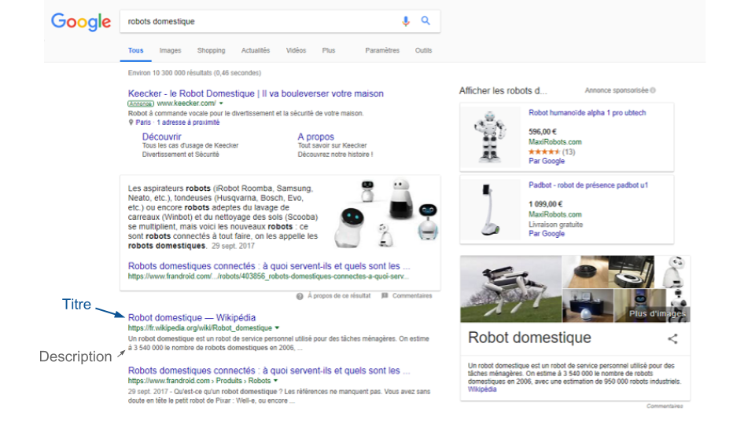

- WebRankInfo rédige régulièrement des articles généralistes sur le SEO - Search Engine Land est très rapide pour dévoiler les mises à jour de Google - Moz publie des articles généralistes sur le SEO.
Google alertes : cet outil vous permet de créer des alertes sur n'importe quel sujet. Créez une alerte sur votre nom de marque ;
Mention : un outil payant de veille qui vous permet de surveiller le web sur le sujet de votre choix ;
Notify : un outil gratuit qui vous permet d'obtenir vos mentions directement sur Slack.
Analyses des logs: Oncrawl : cet analyseur de log est gratuit et open source Seolyzer : cet outil français est gratuit, avec la particularité d’être facilement installable
Wave Evaluation Tool : vérificateur d'accessibilité automatisé aXe : vérificateur d'accessibilité automatisé HeadingsMap permet de voir rapidement la structure des rubriques de la page.
- Augmentez votre trafic grâce au référencement naturel -
1.1 - Analysez le fonctionnement de Google -
Google, c'est 91 % du marché des moteurs de recherche en France, plus de 3 milliards de recherches par jour !
Évidemment, vous n'allez pas avoir 3 milliards de visites sur votre site dès le lendemain de sa création.
En revanche, il est très possible d'avoir plusieurs dizaines, voire centaines de milliers de visiteurs par mois à condition d'avoir bien travaillé votre SEO.
Qui dit visiteurs, dit clients potentiels.
Pourquoi Google ?
Pour les besoins de ce cours et en raison de la très importante prédominance de Google en France, nous évoquerons dans ce cours les techniques principalement relatives à celui-ci.
Néanmoins, même si les moteurs de recherche ont chacun leurs particularités, ils fonctionnent tous selon le même principe de base.
Vous pourrez donc également vous servir de ce cours (en adaptant certaines techniques) pour tous les moteurs de recherche.
Comment fonctionne Google ?
Pour faire simple, le moteur de recherche Google est un robot, appelé aussi "spider" ou "crawler" en anglais, qui parcourt le web en suivant les liens présents sur les sites Internet.
À chaque fois qu'il arrive sur une nouvelle page, il la lit puis l'enregistre grâce un procédé appelé "scraping".
Google extrait ainsi tout le texte d'un site web existant.
On parle d'indexation d'une page web.
Ensuite, grâce à différents algorithmes, il va classer ces pages pour vous donner l'information la plus cohérente possible par rapport à ce que vous aviez tapé dans la barre de recherche, en se basant sur trois grandes familles de critères :
L'autorité : est-ce que les gens parlent de vous sur Internet ?
La cohérence de votre contenu : votre contenu est-il cohérent avec ce que l'utilisateur recherche, et est-il de bonne qualité ?
L'optimisation technique : votre site est-il suffisamment ergonomique et rapide ?
Différencier un résultat gratuit d'un résultat payant
Un exemple de page de résultats d'une recherche Google
Une fois votre recherche lancée, vous arrivez donc sur une page de résultats classés (voir ci-dessus).
Il y a 2 types de résultats principaux :
Les résultats payants :
Des annonces de Google Shopping, présentées sous la forme de fiches produits, généralement tout en haut ;
Des annonces textuelles Google Ads, avec un design difficile à discerner des résultats gratuits, préfacées du terme "annonce" ou "résultats sponsorisés".
Ces résultats peuvent être placés au-dessus ou en dessous des résultats gratuits.
Les résultats gratuits :
Des résultats textuels.
Comme vous pouvez le voir sur l'image ci-dessus, un résultat peut avoir été sélectionné comme particulièrement intéressant et donc mis en avant, même au-dessus des publicités.
D'où l'intérêt de toujours essayer de créer le meilleur contenu possible !
À droite, vous voyez le Knowledge Panel qui sert à apporter des informations plus précises, par exemple en se servant des informations de Wikipedia, des cartes Google Maps ou de Google my Business pour les entreprises (nous y reviendrons !)
Il est aussi possible d'obtenir des vidéos Youtube ou des articles d'actualité qui s'intercalent dans les résultats gratuits.
Notez bien que l'organisation des résultats dans la capture d'écran n'est qu'un exemple.
Le positionnement des différents types de résultats change souvent !
En effet, les annonces Google Shopping peuvent se trouver à la place du "Knowledge Panel".
Autre exemple, si vous cherchez un lieu, une carte Google Maps se positionnera au-dessus des résultats.
Avec l'expérience, vous saurez assez rapidement reconnaître chaque type de résultats.
En attendant, soyez vigilants à ne pas les mélanger !
S'il existe des résultats payants et que mes concurrents ont plus de budget que moi, pourquoi faire des efforts pour améliorer mon SEO ?
La différence entre acheter de l'espace publicitaire sur Google ou sur un moteur de recherche, et améliorer son SEO est fondamentale.
Lorsque vous achetez une publicité sur un moteur de recherche, vous payez à chaque clic.
Il n'est pas rare d'avoir des prix entre 3 et 8 € le clic.
Pour avoir 100 visiteurs par mois, il vous faudra donc payer entre 300 € et 800 € tous les mois.
En revanche, grâce à des efforts modérés et réguliers pour optimiser votre site et améliorer son référencement naturel (SEO), vous pourrez obtenir bien plus de visiteurs de manière gratuite !
De plus, même s'il est difficile d'avoir des chiffres exacts, les professionnels du SEO remarquent que les résultats payants n'obtiennent qu'entre 15 % et 20 % des clics.
Cela signifie que plus de 80 % des clics concernent les résultats gratuits (source : Étude des taux de clics par Synodiance).
Est-ce qu'acheter des publicités Google Ads peut quand même améliorer mon SEO ?
Heureusement non, sinon même des sites de très mauvaise qualité pourraient être premiers en SEO et parmi les publicités !
Cela irait à l'encontre même du principe des résultats gratuits de Google.
La seule chose qui puisse améliorer votre SEO, c'est de créer le site avec le meilleur contenu possible pour vos visiteurs, et que ce contenu soit optimisé pour que Google puisse le comprendre.
Nous verrons comment faire dans les chapitres suivants.
Si votre site est très apprécié des visiteurs, il est possible que le fait de faire une publicité Google Ads améliore indirectement votre SEO.
En effet, faire de la publicité va ramener du trafic sur votre site.
Ces visiteurs vont naviguer sur plusieurs de vos pages et les partager.
Ceci va donc envoyer des signaux positif à Google.
C'est bien l'attrait des visiteurs pour votre site qui améliorera votre SEO, et pas le fait d'acheter des publicités.
Comment Google classe-t-il les résultats gratuits ?
Comme dit précédemment, différents algorithmes sont utilisés pour classer les résultats de recherches.
Voici les plus importants :
Panda : lancé en février 2011, cet algorithme sert à pénaliser les sites ayant du contenu de mauvaise qualité (pas assez de contenu, trop de spam, etc).
Mis à jour régulièrement, cet algorithme a été totalement intégré au cœur de Google courant 2015.
Pingouin : cet algorithme lutte contre la création intempestive de liens.
Il a été créé en avril 2012, puis intégré au cœur de Google en 2016.
Avant la création de cet algorithme, il était très simple de créer des milliers de liens pour se retrouver en première page de Google.
Hummingbird/Colibri et son amélioration, Rankbrain : introduits respectivement en septembre 2013 et début 2015, ce sont ces algorithmes qui permettent à Google de comprendre le contexte d'un mot ou d'une phrase,
ou même de comprendre lorsque vous posez une question pour vous donner directement la réponse.
Pigeon : déployé en juin 2015, il favorise les résultats de recherche locaux et l'affichage sur Google Maps.
Ces algorithmes sont mis à jour en permanence et de nouveaux algorithmes ou améliorations sont mis en place de manière régulière.
Ceci implique de suivre un minimum l'actualité des évolutions de Google pour se tenir au courant des derniers changements, et donc des dernières implications sur vos optimisations !
Pour se tenir au courant, voici quelques sources de qualité :
En français : WebRankInfo rédige régulièrement des articles généralistes sur le SEO ;
En anglais : Search Engine Land est très rapide pour dévoiler les mises à jour de Google
Moz publie également des articles généralistes sur le SEO.
SEO On-Page et SEO Off-Page
Dans le jargon SEO, on appelle SEO On-Page , tout ce qui correspond à l'optimisation du contenu, entre autres :
L'optimisation technique du site : son accessibilité, sa vitesse, sa version mobile (responsive) ;
La mise en place d'une structure technique optimisée SEO (titres, images, contenus) que nous verrons plus tard ;
La création de contenu reprenant vos mots-clés et respectant la structure du site.
Le SEO Off-Page correspond à la recherche et la création de partenariats, dans le but de créer des liens vers votre site.
Vous remarquerez donc que le SEO On-Page revient à toutes les actions que vous pouvez effectuer vous-même pour améliorer votre site,
et le SEO Off-Page, ce qui est en dehors de votre contrôle, parce que les actions se font sur d'autres sites.
White Hat vs Black Hat
Il existe deux types de SEO :
Le SEO dit "White Hat", que vous êtes en train d'apprendre.
Il vise à respecter les guidelines de Google et à être le plus efficace possible sur le long terme malgré les changements d'algorithme ;
Le SEO dit "Black-Hat", que nous ne traiterons pas ici :
il s'agit de techniques visant à "tromper" les moteurs de recherche pour arriver plus vite en première place.
Vous en avez sûrement déjà entendu parlé : créer des centaines de liens sur les forums, écrire du texte blanc sur fond blanc, etc.
Google est assez intelligent pour relever ces pratiques et lutte activement contre, en mettant à jour ses algorithmes.
Je vous conseille donc très fortement de ne pas faire du SEO Black Hat sur le site d'une entreprise établie,
sous peine de risquer vous faire bannir purement et simplement des résultats de recherche de Google.
En bref
Google est le moteur de recherche leader sur le marché français, avec plus de 90 % de parts de marché en France ;
Les résultats payants ne recueillent pas plus de 20 % des clics et n'ont pas d'incidence sur le positionnement des résultats gratuits ;
1.2 - Analysez la pertinence du SEO pour votre organisation -
Le SEO est un canal marketing comme un autre.
Pour qu'il vous apporte du trafic "gratuit", il nécessitera un investissement conséquent en temps ou en ressources humaines.
Comme tout canal marketing, il convient alors de vérifier s'il est cohérent pour vous ou votre organisation.
Définissez vos objectifs
Première étape, posez-vous la question : pourquoi voulez-vous développer votre SEO ?
Est-ce pour avoir plus de clients, ou pour avoir une image d'expert ? Pour être mieux trouvé après un passage télé ?
Voici quelques motivations qui peuvent donner envie à une entreprise de progresser :
Faire plus de ventes / acquérir de nouveaux clients ;
Acquérir de nouveaux prospects pour alimenter vos équipes de vente ;
Améliorer votre image de marque ou votre positionnement ;
Obtenir une véritable image d'expert ;
Être plus visible sur Internet ;
Attirer de nouveaux employés.
Déterminer vos motivations vous aidera à déterminer vos priorités de recherche de mots-clés, il est donc important de vous poser la question maintenant.
Choisissez les bons KPIs
À chaque type d'objectifs correspondent des "KPI" ou "Key Performance Indicators".
On parle d'indicateurs-clés de performance, en français.
Comme leur nom l'indique, ils servent à mesurer la performance de vos efforts SEO.
Voici les principaux :
Visiteurs uniques (VU) ;
Nombre de pages vues par session ;
Taux de conversion sur vos formulaires d'inscription / de paiement ;
Taux de visiteurs récurrents.
Même s'il est important de garder un œil sur tous ces KPIs, certains sont plus adaptés que d'autres, selon vos objectifs.
Par exemple, si vous souhaitez réaliser plus de ventes, vous pouvez obtenir plus de trafic et toujours convertir le même nombre de visiteurs,
ou bien obtenir un trafic moins important, mais plus qualifié, qui est plus facile à convertir.
Autre exemple, si vous souhaitez améliorer l'image de votre marque, il est important de suivre le nombre de pages vues par visiteurs et le taux de visiteurs récurrents.
Il est difficile au début de définir des objectifs précis en SEO, mais pensez à vous servir d'objectifs déjà définis par le passé.
Faites tout de même en sorte de définir des objectifs SMART pour avoir un but précis à atteindre.
Déterminez la pertinence de ce canal
Une fois que vos objectifs et vos KPIs sont définis, il faut maintenant évaluer leur pertinence.
Ai-je le temps, les ressources humaines ou le budget suffisant pour mettre en place une stratégie SEO ?
Le SEO nécessite une implication non négligeable en temps, de votre part ou de celle de vos collaborateurs.
En effet, vous devrez étudier vos mots-clés, certainement modifier ou corriger votre site web, créer des pages et des articles supplémentaires, trouver des partenaires...
Il vous faut donc les ressources ou le temps nécessaires pour pouvoir implémenter au mieux votre stratégie.
Ai-je le temps d'attendre que mon investissement dans le SEO porte ses fruits ?
En effet, pour tout investissement SEO, il faut attendre grand minimum 3 mois avant d'avoir des résultats.
Il y a bien sûr des exceptions, mais comptez en général entre 3 et 6 mois pour voir les premiers résultats, et jusqu'à 12 mois pour voir une progression significative vers votre objectif.
Il faut voir le SEO comme un investissement. Plus tôt vous mettrez en place ce canal (s'il est cohérent), plus vite vous en récolterez les fruits. En revanche, si par exemple, vous êtes pressés par votre plus grand salon pro de l'année, il est évident qu'il vaut mieux reporter ce projet !
Le SEO est un canal qui se développe dans la durée.
Il faut non seulement prévoir le temps nécessaire à l'apparition de résultats, mais aussi continuer les efforts SEO dans le temps pour ne pas perdre votre classement.
Et si mes concurrents sont tous bien placés depuis longtemps ?
En effet, il faut étudier la concurrence avant de vous lancer.
Prenez les principaux mots qui définissent votre métier ou le domaine d'activité et d'expertise de votre entreprise, recherchez-les dans Google et posez-vous les questions suivantes :
Est-ce que mes concurrents sont placés en première page ou est-elle remplie de sites généralistes ou de petits blogs ?
Est-ce que mes concurrents ont un blog avec beaucoup d'articles ?
Les sites en première page ont-ils beaucoup de pages ? Vous semblent-ils optimisés ?
Ces sites sont-ils populaires ? Ex : Doctissimo, Konbini, etc.
Une autre manière consiste à regarder le nombre de résultats récupérés par Google :
Résultats Google KPI
En règle générale :
De 0 à 100 000 résultats, la concurrence est probablement très faible ;
De 100 000 à 500 000 résultats, la concurrence est probablement faible ;
Entre 500 000 et 1 000 000 de résultats, la concurrence est probablement moyenne ;
Au-dessus de 1 000 000, la concurrence est certainement probablement forte.
Le défi relevés par Welcome To The Jungle pour réussir leur stratégie SEO
Welcome to the Jungle est un site de recrutement.
Je l'utilise comme exemple pour illustrer certains chapitres du cours.
Pour la suite du cours, nous utiliserons l'abréviation WTTJ pour Welcome To The Jungle.
Il y avait plusieurs difficultés à prendre en compte avant de lancer un projet SEO pour WTTJ :
La première, c'est le nom de ce site, qui est aussi le nom d'une chanson très connue.
Il a donc fallu du temps, avant que Google fasse la différence entre les Français recherchant effectivement cette chanson,
et les Français ayant entendu parler du site de recrutement ;
D'autre part, à cause de la dominance de Indeed dans les résultats de recherches.
Au lancement de WTTJ, il aurait été difficile avec un site peu connu de Google, d'aller concurrencer Indeed.
Il a donc fallu identifier ces problèmes et les adresser dans une stratégie SEO basée sur des mots- clés plus recherchés, que simplement sur les offres d'emplois.
Nous verrons comment faire cela dans les prochains chapitres.
En bref
Le SEO est un canal marketing, il y a donc des notions d'opportunité et de timing à prendre en compte avant de le lancer ;
Choisissez correctement les KPIs correspondant à vos objectifs ;
Vérifiez que vous avez le temps et les ressources nécessaires à la mise en place du projet.
Pour tout projet, une roadmap est indispensable pour vous, votre organisation ou vos clients.
Elle vous permet de bien savoir si vous êtes dans les temps et permet à vos clients ou votre manager de suivre votre avancée.
Comme vous le verrez, cette roadmap correspond presque exactement au déroulé du cours.
Effectuez un court audit préalable
L'audit préalable vous permet de voir si le site est déjà aux normes SEO ou si un audit plus important (et donc un plus gros chantier !) est à planifier.
Un audit est une analyse globale du site et permet de vérifier que toutes les bonnes pratiques SEO que vous apprendrez dans ce cours, sont respectées :
Une analyse de mot clé a été réalisée pour déterminer sur quelles requêtes le site doit apparaître dans les premiers résultats des moteurs de recherche ;
Le site et les pages respectent les normes techniques dites "On-Page" et sont optimisés pour les mots clés ;
Le site possède un espace pour rajouter du contenu de qualité de manière régulière (machine à contenu) ;
Des sites externes font des liens vers le site.
Détectez les principaux problèmes avec cet audit
Il prend généralement entre 30 minutes et 1 heure et est grandement facilité si le site en question a été créé grâce à un CMS (Content Management System, permet de créer facilement un site web) tel que Wordpress, car vous pourrez supposer que toutes les pages respectent le même template (la même structure, le même modèle).
Il vous permettra de voir s'il y a de gros soucis à résoudre en premier, tels qu'un problème d'indexation.
Un problème d'indexation signifierait que les pages du site ne sont pas enregistrées par Google.
Recherchez les bons mots-clés
Rappelez-vous, Google classe les résultats en fonction du contenu des pages, vous aurez donc à effectuer une recherche de mots-clés.
Accordez du temps à la recherche des bons mots clés sur lesquels vous positionner
Ce processus est plus chronophage si le site a de multiples domaines d'actions.
En effet, plus le domaine est spécialisé, plus le champ lexical et donc les possibilités de mots-clés sont limités.
Au contraire, si votre sujet est très général, il y aura beaucoup de travail pour déterminer les mots-clés qui seront utiles à la réalisation de vos objectifs.
Optimisez votre site et construisez votre machine à contenu
Il faut ensuite mettre en place à la fois une optimisation technique du site (son accessibilité, sa vitesse, sa version mobile) et une structure technique optimisée en SEO sur toutes les pages (titres, images, contenus).
Il s'agit du début de l'optimisation "On-Page".
Faites les principaux fixs (corrections) de votre site et lancez votre machine à contenu
Vous utiliserez l'audit préalable pour effectuer, cette fois-ci, un audit complet du site.
Ceci vous permettra de voir les points à modifier et à améliorer.
Il vous faut prévoir le temps de modification du site web, par un développeur ou par vous-même si vous avez les compétences techniques.
Enfin, il faut que vous prépariez la création de contenu reprenant vos mots-clés et respectant la structure du site.
C'est une étape très importante de l'optimisation d'un site !
En effet, plus vous aurez de pages de contenu plus vous aurez de "portes d'entrées" potentielles depuis les moteurs de recherche.
À partir de vos mots-clés, vous aurez aussi une bonne idée du nombre de contenus à créer au total, et de la priorisation de ce contenu.
Définissez les potentiels partenaires
Une fois toutes les modifications On-Page effectuées et la création de contenu lancée, il vous faut maintenant obtenir des liens en créant des partenariats.
Obtenez des liens vers votre site
Il y a plusieurs étapes à prévoir :
La création des liens de bases (réseaux sociaux, Youtube, annuaires, etc.) ;
La recherche de partenaires ;
La prise de contact et la création des liens.
Surveillez l'évolution de vos actions SEO
Enfin, il vous reste à prévoir le reporting et le suivi des actions que vous avez mises en place.
Gardez un oeil sur vos indicateurs
Vous risquez de vous y perdre si vous ne mettez en place ce suivi d'indicateurs pour vous-même ; et si vous le faites pour un client, il faudra l'accompagner et lui prouver que vos actions ont eu un impact.
Il vous faudra donc définir la périodicité et le niveau de détail de reporting que vous allez fournir, ainsi que leur forme (export des chiffres, slides, etc.)
Déterminez les ressources nécessaires
Vous, votre client ou votre manager allez avoir besoin de savoir approximativement le budget et le temps pour mettre en place le projet SEO.
Ceci est possible grâce à l’audit préalable : vous y verrez l’étendue du travail à faire pour chaque étape ; vous pourrez ainsi estimer un temps de travail et donc un budget.
Par exemple, si l’entreprise connaît déjà bien ses clients et sait bien décrire son activité, la recherche de mots-clés sera plus simple à réaliser.
De même, si le site est déjà aux standards web et semble respecter les bonnes pratiques d’optimisation SEO, vous saurez que l’audit complet sera très rapide à faire.
Voici une idée de la charge de travail pour chaque étape suite à l'audit préalable :
Recherche de mots-clés : - entre ½ journée et 2 jours ;
Optimisations du site :
Audit complet - 1 à 4 jours ;
Optimisation du contenu des pages existantes - 2 h par page.
Corrections techniques - à l'aide de développeurs (notez que la durée de cette étape dépend grandement de la technologie du site. En général, au moins 1 jour ;
Création de contenu, par exemple d’articles - ½ journée à 1 journée par article ;
Recherche de liens et de partenaires - entre 2 et 5 jours (à répéter régulièrement) ;
Mise en place du reporting - 1 à 2 jours.
Cet exemple de budget est valide pour des sites de taille moyenne, sans particularités ou problèmes techniques importants, et dépendra bien sûr de votre expérience.
Il sera plus long pour un site e-commerce avec plus de pages ou de fonctionnalités, contenant des centaines de produits, par exemple.
En bref
Il y a 5 étapes pour réussir l'amélioration de votre SEO :
L'audit préalable ;
La recherche de mots-clés ;
L'optimisation du site & la construction de votre machine à contenu ;
La recherche de liens et de partenaires potentiels ;
Le suivi de vos performances.
Toute cette étape de planification vous permettra de déterminer le budget approximatif de votre projet SEO, qu'il faudra ajuster par la suite.
2.1 - Reconnaissez les différents types de mots-clés -
Mots-clés vs sujets
Google accorde de plus en plus d'importance aux mots-clés placés dans un contexte, aux questions et aux expressions composées de plusieurs mots.
Cela signifie que Google accorde plus d'importance à un sujet donné plutôt qu'à des mots simples.
D'ailleurs, même si vous tapez un mot unique dans Google, celui-ci adaptera les résultats à votre position géographique, à vos recherches précédentes et à bien d'autres critères.
Même si aujourd'hui, on dit toujours "recherche de mots-clés" ("keyword research" en anglais), il serait plus correct d'appeler cette étape de l'optimisation SEO la "recherche de sujets".
Vous trouverez aussi sur internet la notion "d'expressions clés". Toutes ces appellations sont encore utilisées.
Pour simplifier, nous garderons l'appellation "recherche de mots-clés" parce que l'expression est restée dans le vocabulaire professionnel du domaine.
Suivant vos objectifs, tous les mots-clés (ou sujets) ne se valent pas !
Voyons les différents types de mots-clés tout de suite.
Mots-clés de marque
Ce sont tous les mots relatifs à votre marque, comme son nom, le nom de vos produits, etc.
Il n'y a aucune raison pour que vous ne soyez pas premier sur ces mots-clés.
Ils sont très importants car vos clients ne connaissent pas forcément l'adresse de votre site web et souhaitent souvent avoir plus d'information.
De plus, certaines marques sont tellement connues que leur trafic SEO provient en majorité de la recherche sur leur nom.
Exemples de mots-clés de marque
Certaines grandes marques de cosmétique comme Yves Rocher ou même de nouvelles marques comme Horace ;
Le site de recrutement Welcome To The Jungle, dont la marque est aussi une chanson très connue !
Pour un site comme Ubisoft (un éditeur de jeux vidéos), ces mots-clés sont le nom de marque, donc Ubisoft, mais aussi le nom de ses jeux vidéos (comme Assassin's Creed).
Mots-clés généralistes
Ces mots-clés sont souvent composés d'un seul mot : chaussure, voiture, voyage, etc.
Leur volume de recherche est certes élevé, mais ils sont généralement très concurrentiels et le trafic est souvent peu qualifié.
Yves Rocher pourrait tenter de se placer sur des mots comme "crème hydratante" ou "maquillage" ;
Pour WTTJ, ce serait des mots comme "recrutement" ou "recherche d'emploi" ;
Pour Ubisoft, ils pourront viser "jeux-vidéos" ou encore "jeux ps4".
Mots-clés d'information
Ils sont souvent formulés sous forme de questions (Comment ? Pourquoi ? Qu'est-ce... ?) ou suivis par le mot "définition".
Ces mots-clés sont intéressants pour plusieurs raisons :
Ils ont une concurrence moins importante ;
Le trafic est plus qualifié car la personne se renseigne sur votre produit / votre métier ;
Ils permettent de vous créer une image d'expert ou une relation de confiance.
En effet, si vous fournissez une définition claire à un client potentiel, il est plus susceptible de vous faire confiance pour ses futurs achats.
Yves Rocher pourrait conseiller ses clients pour leur vendre des produits par la suite, avec des articles comme "Comment bien se maquiller ?" ;
WTTJ peut conseiller soit les marques, soit les personnes en recherche d'emploi, avec des articles comme "Comment recruter un développeur ?" ; "Comment trouver un job en start-up ?" ;
Ubisoft pourrait indiquer une liste des jeux en 2018 en publiant un article comme "Quels sont les meilleurs jeux en 2018 ?".
Mots-clés d'intention (transactionnels)
Ils commencent par des verbes d'intention ou d'action (acheter, trouver, rechercher, réserver ...).
Ce sont des mots-clés très intéressants si vous recherchez des prospects ou de futurs clients.
En revanche :
Ils ont souvent un volume de recherche plus faible ;
Ils sont souvent concurrentiels ;
Ils sont jonchés d'annonces payantes, parfois jusqu'à 4 annonces en plus de l'espace réservé à Google my Business, ce qui fait descendre les résultats gratuits très bas dans la page.
Pour Yves Rocher, cela correspondrait à "Achat crème hydrante" ;
Pour WTTJ, "recruter un développeur", "poster offre recrutement" ;
Pour Ubisoft, "achat Assassin's Creed".
Mots-clés locaux ou de navigation
Ils indiquent soit une zone géographique (nom de rue, quartier, ville ...), soit un désir de se déplacer quelque part (à proximité, où, trouver, aller...).
Ils sont très utiles pour les business ayant des boutiques ou enseignes physiques, et notamment pour une technique qu'on appelle SEO local que nous abordons plus loin dans le cours.
Pour Ubisoft, "achat Assassin's Creed à proximité".
Courte vs longue traîne
Courte traîne
On appelle courte traîne les "top requêtes" de Google pour un sujet donné, c'est-à-dire celles qui ont le plus gros volume de trafic.
Ce sont souvent les mots les plus évidents, souvent généralistes ou transactionnels.
Le trafic est plus ou moins qualifié selon le type de requête, et la concurrence est toujours très élevée.
Courte vs Longue Traîne
Lorsque vous commencez votre optimisation SEO, il est souvent déconseillé de travailler sur la courte traîne,
car votre site n'aura pas la confiance de Google nécessaire pour que vous soyez bien placé.
En revanche, ces requêtes restent quand même très intéressantes à moyen et long terme, surtout les top requêtes transactionnelles.
En effet, elles reçoivent beaucoup de trafic, et donc un fort potentiel de nouveaux prospects ou clients, ainsi que de partage de votre contenu sur les réseaux sociaux.
Elles apportent aussi une image d'expert et participent au développement de votre image de marque.
Ces concepts ne dépendent pas du nombre de mots que vous tapez dans la barre de Google mais bien de leur volume de recherche.
Ainsi une expression comme "développeur web" est de plus courte traîne que "algorithmicien", car son volume de recherche est bien plus élevé.
Exemples de courte traîne
Pour Yves Rocher, "maquillage", "pinceau maquillage" ;
Pour WTTJ, "recrutement", "emploi", "recherche emploi" ;
Pour Ubisoft : "jeux-vidéo", "pc".
Longue traîne
La longue traîne regroupe toutes les requêtes liée à votre activité et qui ont un faible trafic.
Ce sont généralement des expressions de plusieurs mots plus précises.
Prises séparément, ces requêtes sont moins intéressantes car leur trafic est souvent assez faible.
Cependant, il est beaucoup plus facile de s'y placer en première position et surtout, pour un même sujet, d'arriver en première place sur plusieurs requêtes avec une seule page de contenu.
De plus, le trafic qui en découle est souvent beaucoup plus qualifié et susceptible de créer une relation avec vous. Le trafic potentiel de tous les mots-clés de longue traine est, au final, bien plus important que celui de la courte traine.
Il est donc conseillé de commencer par créer du contenu avec ces requêtes lorsque vous commencerez vos optimisations SEO.
Exemples de longue traîne
Pour Yves Rocher, "se maquiller les yeux" ;
Pour WTTJ, "recrutement développeur web Paris" ;
Pour Ubisoft, "meilleurs jeux-vidéos d'action 2018".
Du coup, je pourrais faire écrire des petites pages sur toutes les requêtes de longue traine, ce qui démultiplierait mon SEO, non ?
Pas vraiment ! Il ne s'agit pas de spammer Google avec des milliers de pages ne contenant que quelques mots.
Ceci serait considéré par Google comme une tentative de Black Hat.
Nous verrons dans les chapitres suivant qu'il y a un nombre de mots minimum à viser sur une page.
Si vous pouvez écrire un contenu assez long, alors cela vaut le coup de créer une page à part entière.
Sinon, mieux vaut regrouper les requêtes de longue traine par thème.
En bref
Il existe plusieurs types de mots-clés avec leurs avantages et leurs inconvénients ;
Privilégiez la longue traine lorsque votre site n'est pas encore très connu ;
N'oubliez pas les mots-clés dits "locaux", s'ils sont cohérents dans votre stratégie.
2.2 - Effectuez votre première recherche de mots-clés -
Comme vous le savez maintenant, les moteurs de recherche se basent sur du contenu.
La recherche de mots-clés est l'étape la plus importante d'une optimisation SEO.
En effet, rien ne sert d'optimiser votre site sur des mots qui ne vous rapporteront pas de trafic, ou du trafic de mauvaise qualité.
Commencez par créer un fichier Excel (ou votre tableur favori) vide. Nous le mettrons à jour au fur et à mesure de ce chapitre.
Trouvez vos mots-clés de base
Créez un premier onglet "mots-clés de base".
Ce sont les mots-clés qui définissent votre activité, votre métier et votre entreprise.
Pour les trouver, il y a plusieurs techniques :
Effectuez un brainstorming avec 2 ou 3 personnes proches du métier, de l'opérationnel et surtout, si possible avec un client !
Il est possible que vous utilisiez des termes ou du jargon trop techniques par rapport à ceux utilisés par vos clients ;
Relisez les emails que vos clients ont envoyés au support.
Vous pourrez vérifier que les mots-clés que vous avez trouvés sont effectivement ceux utilisés par vos clients ;
Écrivez enfin tous les autres mots-clés relatifs à votre organisation.
Pensez aux informations de base, description du métier, expertises, jargon technique...
Les mots-clés de base seront ensuite démultipliés grâce à plusieurs techniques.
Plus vous en trouverez dans cette étape, plus la suite de votre recherche sera facilitée. Exemples pour un site de box de produits d'alimentation bio
Les mots-clés de base seront les mots-clés évidents, ainsi que les mots-clés que vous aurez trouvés grâce aux différentes techniques ci-dessus :
Box bio ;
Box produits bio et box produits naturels ;
Box alimentation bio.
Mais aussi des mots-clés comme :
Réglementation bio ;
Trouver des produits bio.
Ces mots-clés ne sont pas des mots-clés qui vous rapporteront directement des clients prêts à acheter, mais des visiteurs potentiellement intéressés par l'alimentation saine, qu'il sera ensuite facile de convaincre.
Regroupez ces mots-clés en thèmes
Une fois que vous avez vos mots-clés de base, regroupez-les en thèmes.
Un thème est souvent un mot-clé général ou un mot-clé de courte traîne.
Dans le tableur, créez un onglet pour chaque thème.
Exemple de thèmes
Excel de recherche de mots clés
Vous aurez évidemment un nombre bien plus important de mots-clés que dans cet exemple. Vous devrez donc absolument les regrouper en thème.
Box bio : tous les mots-clés comprenant box bio ou proches ;
Réglementation bio : des mots-clés intéressants sur l'aspect réglementaire pour informer vos potentiels clients et donner une image de confiance ;
Produits bio : des mots-clés comprenant le mot "produits", comme "produits bio" ou "produits naturels".
Décuplez vos mots-clés
Une fois que vous avez vos mots-clés de base et vos thèmes généraux, plusieurs outils vont vous permettre de décupler vos idées et de remplir vos onglets :
Google keyword planner donne une idée du nombre de recherches par mois par rapport aux annonces payantes !
Certes, ce n'est pas parce qu'une requête ne remonte pas de résultats qu'elle n'est pas cohérente, mais concentrez-vous tout de même sur ce que vous trouverez dans cet outil.
Kwfinder est un outil payant de très bonne qualité ; il permet aussi de mâcher une partie du travail, car il calcule la concurrence pour les mots-clés.
Answer The Public est un outil qui vous permet de trouver des idées parmi l'auto-complétion de Google.
En effet, Google vous suggère des mots-clés après les premières lettres tapées dans la barre de recherche.
C'est une excellente source d'idées de mots-clés !
Lors de cette recherche, vous trouverez peut-être des thèmes que vous avez oubliés.
Dans ce cas, vous les rajouterez dans votre recherche.
Vous avez besoin d'un compte Google Ads pour accéder à Google Keyword Planner, mais le service reste gratuit tant que vous ne lancez pas de campagne.
Attention, lors de la création de votre compte, Google Ads vous proposera de créer une campagne.
Vous pouvez sauter cette étape en cliquant sur le lien "Activer le mode expert" puis sur "Créez un compte sans campagne".
Si vous ne l'avez pas vu et que vous êtes rentré dans l'assistant de création, il vous suffit d'aller jusqu'au bout du processus, puis d'arrêter la campagne et de la supprimer immédiatement.
N'oubliez pas de le faire pour ne pas vous faire débiter d'argent !
Vous pourrez ensuite utiliser Google Keyword Planner.
Exemple d'utilisation de Kwfinder
Kwfinder - Box bio
Il vous suffit d'insérer vos mots-clés dans l'outil.
N'oubliez pas de bien choisir le pays qui vous intéresse, ainsi que la langue.
Cherchons ensemble des idées grâce au mot-clé "box bio".
Voici ce que nous obtenons :
Résultats Kwfinder - Box bio
Nous pouvons déduire plusieurs informations intéressantes de ces résultats :
Il semble que "box bio" soit plus assimilé à des box cosmétiques qu'à des box alimentaires.
Le mot-clé est donc certainement trop général ;
Vous trouvez tout de même d'autres idées de mots-clés, comme par exemple "box gastronomie", qui a un volume de 500 recherches mensuelles ;
Cet outil vous donne également un score de concurrence organique, c'est-à-dire la concurrence estimée pour la première page des résultats gratuits de Google.
Les scores de concurrence organique sont généralement plus bas que la réalité.
Utilisez-les pour vous faire un avis, mais ne basez pas votre stratégie entièrement sur ces scores.
Étudiez la concurrence
Vous pourrez trouver assez facilement les mots-clés de votre concurrence, en suivant les étapes suivantes :
Tapez votre mot clé principal (celui qui définit le mieux votre activité, service ou expertise) dans Google ;
Isolez vos 5 concurrents principaux ;
Allez visitez leurs pages, surtout leurs pages satellites (souvent situées dans le footer) ainsi que leur blog ;
Rajoutez les idées de sujets dans un onglet "sujets concurrence" ;
Recherchez sur kwfinder ou sur keyword planner si ces sujets ont des volumes de recherche intéressants.
Exemple d'étude de la concurrence
Si on tape "box gastronomie" dans Google, il y a 22 500 000 de résultats à date de ce cours, ce qui suggère une concurrence forte.
En revanche, nous remarquons que les 4 premiers résultats gratuits sont des sites de regroupement de produits, qui comparent plusieurs box différentes :
Smartbox ;
Wonderbox ;
Touteslesbox ;
Laboxdumois.
Ces sites sont connus, mais ont très peu de contenu textuel.
De plus, ces sites ne traitent pas que de box d'alimentation, mais de tout type de box.
En faisant un site dédié à une box d'alimentation, avec un contenu optimisé de qualité, il sera très probablement possible de se placer parmi eux.
Ces sites étant connus, il faudra également obtenir des liens pour pouvoir les dépasser.
Analysez vos résultats
Une fois que vous avez tous ces mots-clés, analysez-les pour trouver les mots-clés les plus cohérents, les plus intéressants pour vos objectifs.
Pensez bien aux différents types de mots-clés et privilégiez d'abord les mots-clés de longue traine transactionnels.
Ce sont eux qui vous rapporteront le plus vite quelques prospects.
Exemple d'analyse
N'oublions pas, dans notre exemple, que "box bio" peut être facilement assimilé à des box de cosmétique.
Il faudra donc indiquer aux visiteurs et aux moteurs de recherche que notre site vend bien des box d'alimentation !
"Box alimentation bio" semble donc être un meilleur mot-clé.
Cependant, ce mot-clé n'a que 10 recherches mensuelles, ce qui est trop peu.
Le meilleur compromis semble donc de commencer par traiter le mot-clé "box gastronomie".
Recherchez les opportunités
Une opportunité se traduit par une expression avec un trafic correct - minimum 100 visiteurs par mois - que vos concurrents ont oubliée.
Vérifiez pour chaque thème la concurrence associée aux plus grosses requêtes : est-ce que tous vos concurrents sont placés dessus ?
Y a-t-il peu de concurrents et donc une opportunité ?
Exemple d'opportunité
Reprenons le mot clé "box gastronomie". Ce mot ne contient pas la notion de "bio" mais est tout de même intéressant.
En effet, il montre l'intérêt du visiteur de trouver une box de nourriture de qualité.
Ce mot-clé a un volume de 500 recherches mensuelles, ce qui est très correct, et n'est pas très concurrentiel.
En raison de son fort potentiel business, d'un volume de recherche correct et d'une concurrence organique faible, c'est une opportunité à saisir.
En bref
Voici pour rappel les 5 étapes pour effectuer une bonne recherche de mots-clés :
Trouvez vos mots-clés de base et regroupez-les en thèmes ;
Nous avons abordé rapidement la notion de mots-clés locaux dans le chapitre 1.
Rappelez-vous, ce sont les mots-clés composés d'une information géographique.
Est-ce que les mots-clés locaux vont m'amener du trafic ?
Pour savoir, c'est très simple.
Voici les questions à vous poser.
Cette liste n'est pas exhaustive, mais vous donnera une idée :
Avez-vous une enseigne physique ?
Est-il important que vos visiteurs ou vos futurs employés puissent trouver vos bureaux ?
Votre business se situe-t-il dans une zone donnée ?
Votre offre ou service dépend-elle de l'endroit où vous vous trouvez ?
Si vous avez répondu oui à l'une de ces questions, il est probable que vous ayez besoin d'ajouter une composante locale à votre stratégie SEO, c'est à dire de rajouter votre ville ou votre zone d'activité.
Google My Business sert à indiquer à Google la position de votre business sur la carte.
Il sert aussi à récupérer des avis. C'est le plus important !
Il faut absolument que votre adresse apparaisse quelque part sur votre site web,
et que ce soit la même que celle que vous avez paramétrée sur Google My Business.
Pour cela, il vous suffit d'aller sur le site : Google My Business, de cliquer sur le bouton Commencer et de suivre les étapes.
Ne vous trompez pas dans votre adresse, et n'oubliez pas d'ajouter votre numéro de téléphone, ainsi que l'URL de votre site.
Mettez bien l'URL exact, "https" si vous l'avez, "www." s'ils sont présents.
Rajoutez aussi des photos des bureaux et de l'équipe, qui permettront d'augmenter la confiance de vos visiteurs.
En effet, la photo de base reprise par Google est souvent une façade de l'immeuble prise par les voitures Google (pas très inspirant, donc...) .
Adaptez votre site web
Sur votre site, créez une page reprenant les informations suivantes :
Adresse complète ;
Numéro de téléphone si nécessaire ;
Horaires si nécessaire ;
Une carte est un plus pour indiquer votre emplacement ;
Un descriptif d'accès ;
Un descriptif du lieu.
Si vous avez plusieurs locaux, vous pouvez créer une page par local.
Lorsque vous êtes implantés dans plusieurs localités, il ne faut pas simplement faire un copier-coller des pages et modifier le nom de la ville.
Le mieux est d'écrire une page de bonne qualité, sans copier-coller, reprenant les particularités de chacun des endroits.
Obtenez des citations
Tripadvisor - Logo
Un fois ces pages créées, partagez ces informations le plus possible :
Utilisez les annuaires locaux. Même si vous ne pouvez pas mettre de lien, cela reste intéressant ;
Si votre région possède un journal digital, n'hésitez pas à envoyer un email pour vous présenter.
<3>Gérez vos avis
La dernière composante est une des plus importantes : les avis.
Il est très important d'encourager les avis favorables et de répondre aux avis négatifs.
Vérifiez sur les plateformes d'avis que vous n'avez pas un compte créé d'office, ce qui est une pratique courante.
Voici quelques exemples de site d'avis :
Trustpilot et avis-vérifiés : sites d'avis généralistes, sollicités ou non.
Des entreprises dans tous les domaines (ou presque) y sont représentées.
L'avantage principal de ces sites réside dans le fait que les avis négatifs ne peuvent pas être supprimés, ce qui apporte beaucoup de crédibilité.
Les faux avis ou avis diffamants sont bien entendus modérés ;
Glassdoor : plateforme de recrutement qui propose aussi aux employés de déposer des avis sur leur entreprise.
Cette plateforme est très intéressante si vous avez comme objectif de développer votre marque employeur ;
Yelp : site d'avis généralistes et participatifs pour les commerces de proximité, particulièrement intéressant pour les restaurants par exemple ;
Tripadvisor : site d'avis participatifs et conseils dans le domaine du voyage.
En bref
Déterminez si les mots locaux sont pertinents pour vous ;
2.4 -Entraînez-vous en cherchant les mots clés les plus pertinents pour votre site -
À vous de jouer!
Pour vous entraîner, réalisez cet exercice étape par étape.
Une fois terminé, vous pouvez comparer votre travail avec les pistes que je vous propose et découvrir un document ressource en bonus.
Vous venez de décrocher un poste en tant que traffic manager dans une PME vendant un nouveau produit, un boitier permettant de s’endormir plus rapidement le soir et de mieux dormir durant la nuit.
Après avoir fait le tour des locaux, le Directeur Marketing, Eric, vous explique qu’il souhaite investir dans une stratégie SEO pour développer un nouveau canal marketing, car la performance des publicités commence à stagner.
Il vous explique que les clients existants de l’entreprise cherchent des solutions concernant leur insomnie, leurs problèmes de sommeil, leurs problèmes d’endormissement, ainsi que les remèdes naturels contre l’insomnie.
Ils sont très réfractaires à l’idée d’utiliser des somnifères, qui leur provoquent des effets secondaires.
De plus, étant très soucieux de leur santé, ils étaient tout d’abord méfiants à l’idée de cliquer sur les pubs qui paraissent “trop belles pour être vraies”.
Vous comprenez que c'est le moment de préparer la création de contenus en faisant une recherche de mots clés !
Vous avez désormais assez d'éléments pour lancer votre recherche, à vous de jouer !
En suivant la méthodologie du cours, remplissez un fichier excel avec vos idées de mots clés.
Voici pour rappel les étapes nécessaires :
Créer un fichier excel ;
Extraire du texte ci-dessus les mots clés principaux qui décrivent le service du PME et ceux issus de l'échange avec Eric autour des clients et leurs besoins ;
Regrouper ces mots clés en 5 thèmes ;
Obtenir un minimum de 50 nouveaux mots clés ;
Lister pour chacun de ces mots clés leur volume de recherche et leur concurrence organique ;
Trouver un mot clé ou sujet qui présente une opportunité ;
Pour rappel : une opportunité signifie qu'il y a concurrence faible sur ce mot (volume de recherche > 500), mais que son trafic est très qualifié.
Justifiez brièvement votre choix de sujet dans le second onglet du fichier excel en quelques phrases, par exemple en vous appuyant les types de mots clés et leur intérêt respectif.
Attention : évitez de mettre trop de mots clés similaires simplement pour atteindre les 50 mots !
Evitez de mettre des variantes de pronoms, une expression comprenant les mêmes mots dans un ordre différent, etc.
Par exemple : "Insomnie" et "insomnies" ou "insomnie que faire" et "que faire insomnie" ne comptent pas pour deux chacun !
Vous avez une autre idée de thème ? Vous aimeriez profiter de l'exercice pour travailler dessus ? C'est tout à fait possible, profitez-en!
Vérifiez votre travail
Vérifiez que votre fichier excel contient les éléments suivants :
Au moins 50 mots clés qui sont..
“utiles” - il n'y a pas une majorité de variantes presque exactes du même mot clé ;
séparés dans des thèmes pertinents ;
Les informations importantes pour justifier les choix de mots clés, notamment :
volume de recherche ;
concurrence organique :
Une justification du thème choisi, entre les types de mots clés suivants :
un mot clé d’intention et de recherche de solution pour justifier de commencer par l’obtention de prospects qualifiés ;
un mot clé de longue traine pour une concurrence moins forte ;
un mot clé d’information pour obtenir une image de confiance.
Voici un exemple pour vous permettre de vérifier votre travail.
Et voici une ressource bonus en échange !
Bravo d'avoir complété cet exercice !
Comme annoncé, pour vous féliciter d'avoir réalisé cet exercice, voici un outil que vous pouvez utiliser comme support pour planifier la roadmap de votre stratégie SEO et pour la présenter à un tiers.
Aujourd'hui, beaucoup de moyens existent pour créer un site web :
Les CMS tels que Wordpress ou Drupal ;
Créer son site custom de A à Z ;
Les sites de création en ligne.
Selon W3Tech, à date de ce cours, plus de 50 % des sites sont créés grâce à des CMS et 32 % d'entre eux sont créés avec Wordpress.
Notez bien que les sites de création de sites, comme Strikingly, sont rarement bons pour le SEO.
Si mon entreprise n'a pas de site, ou doit faire une refonte totale, quelle technologie faut-il choisir ?
Wordpress est idéal pour la création de site vitrine avec blog, c'est-à-dire sans besoin métier directement sur le site.
Ce CMS vous permet de développer quelques fonctionnalités custom dans la limite du raisonnable et d'ajouter des plugins simples, par exemple des plugins de réservation ou de paiement.
C'est un bon choix si vous avez un budget limité, mais que vous souhaitez tout de même avoir la main sur votre code et votre serveur.
Un site custom est idéal s'il faut qu'il présente des fonctionnalités plus sophistiquées que les sites vitrines.
Pensons à OpenClassrooms par exemple : il est nécessaire de s'inscrire à des cours, à des programmes, de pouvoir poster un cours, etc.
L'équipe ne s'en sortirait pas avec un Wordpress !
Si vous avez déjà un trafic très important - plusieurs centaines de milliers de visiteurs par mois - il est aussi intéressant d'avoir un site custom pour pouvoir gérer cette charge importante.
De manière générale, nous vous déconseillons les sites de création en ligne si votre focus est le SEO.
Certains sont de très bonne qualité, mais la plupart sont codés de manière à vous faciliter la vie et ne prennent que peu en compte le SEO.
De plus, vous n'aurez pas la maîtrise totale du site ni du serveur, ce qui pourra poser des problèmes pour certaines optimisations.
Pourquoi vérifier la technologie d'un site web ?
Il est important de savoir déterminer si le site web de votre client ou de votre organisation a été créé grâce à un CMS, ou s'il est totalement custom.
En effet, certains CMS facilitent grandement l'implémentation d'une stratégie SEO, ce qui implique donc une charge de travail et un budget moins important.
Par exemple, dans la plupart des CMS, les pages du site utilisent un template identique, ce qui permettra de gagner du temps lorsque vous auditerez le site.
Comment vérifier ?
Outil pour détecter la technologie d'un site web
Le plus simple est d'utiliser un site pour cela. Vous pouvez par exemple utiliser WhatCMS.
Il vous suffit de taper l'adresse du site dans la barre de recherche et d'attendre le résultat.
Si vous n'êtes pas sûr, vous pouvez cliquer sur le résultat pour avoir plus d'informations.
Si vous vous y connaissez un peu en développement web, vous pouvez directement aller chercher dans le code via les outils des navigateurs (F12 sur Google Chrome).
Cependant, il est quand même beaucoup plus rapide de passer par WhatCMS.
Exemples de résultats de WhatCMS : OpenClassrooms Openclassrooms - Résultat WhatCMS
Le site sur lequel vous êtes actuellement est un site custom, se basant sur un Framework PHP appelé Sylius.
Il est donc probable que certaines pages utilisent une structure similaire.
Criteo Criteo - Résultat WhatCMS
Leur site utilise le CMS Wordpress. Leur Wordpress est probablement customisé, mais les pages auront certainement la même structure.
WTTJ Welcome To The Jungle - Résultat WhatCMS
Leur site est un site custom, codé de A à Z. Il y aura donc probablement un travail d'audit important.
Pourquoi ne pas directement demander sur quelle technologie repose un site à un des développeurs du site ?
Si vous avez le choix, vous pouvez effectivement demander directement aux développeurs de votre entreprise ou de votre client.
Cependant, le fait de connaitre la technologie d'un site web d'avance vous permettra d'être plus efficace, car vous pourrez préparer des questions précises concernant le SEO.
Ceci donnera confiance à votre interlocuteur et pourra même créer un léger effet "Waouh" chez certains clients peu technophiles.
Enfin, cela vous permettra de gagner du temps sur votre audit SEO.
En bref
Connaître la technologie d'un site vous permettra d'aller plus vite sur votre audit SEO ;
Les CMS sont très efficaces pour les sites vitrines et de contenus, ou avec un fonctionnement basique ;
Si votre site web nécessite une véritable logique métier, il vaudra mieux développer une solution custom.
Avant toute démarche SEO, vous devrez absolument installer ces 2 outils : Google Analytics et Google Search Console.
Google analytics et Google Console - des outils indispensables en SEO
Ces deux outils permettent de découvrir :
D'où viennent vos visiteurs ;
Les requêtes tapées sur Google pour vous trouver ;
Beaucoup d'autre données vous aidant à vous familiariser avec votre audience, comme son âge moyen, etc.
Demandez-vous toujours, ou demandez à votre client s'il possède un compte gmail générique, ou s'il peut vous créer une adresse/des accès.
De cette manière, il vous sera plus simple de lui donner les accès une fois votre travail terminé.
Installez Google Analytics et Google Search Console
Google Analytics (GA)
Google Analytics vous permet d'obtenir des informations sur les visiteurs de votre site, comme leur nombre, le support qu'ils utilisent (desktop vs mobile), les pages qu'ils ont visitées, etc.
Pour l'installer, je vous conseille cette vidéo faisant partie d'un cours complet sur Google Analytics sur OpenClassrooms.
Pour résumer, il s'agit de vous inscrire à Google Analytics et de renseigner l'URL de votre site.
Vous pourrez ensuite récupérer un code de tracking (un code de suivi) qu'il faudra copier puis coller entre les balises < head>< /head> de toutes ses pages.
Si vous n'avez pas accès au code, demandez à la personne en charge du site d'ajouter cet outil. Cette opération est très rapide.
Le code que vous verrez dans cette vidéo du cours d'OpenClassrooms sera un peu différent de celui que vous devrez copier-coller, pour une raison simple : Google encourage désormais l'utilisation de son tag manager.
Ce n'était pas le cas au moment où la vidéo a été réalisée. Voici la documentation officielle actuelle de Google sur l'installation de Gtag.
Un tag manager permet de manager et de déployer ces outils sans avoir à modifier le code de votre site web
ou d'avoir à passer par les développeurs à chaque fois que vous aurez besoin de rajouter un outil Marketing.
Il existe beaucoup d'autres outils qui permettent un suivi plus poussé des utilisateurs sur votre site, par exemple le Pixel Facebook.
Installer ces outils nécessite de rajouter des bouts de code dans votre site.
Installez Google Search Console
Google Search Console vous permet d'avoir des informations très précises sur ce que vos visiteurs recherchent sur Google pour vous trouver.
Pour l'installer, c'est très simple :
Entrez l'URL exact de votre site : avec https si vous l'avez, avec www si c'est la version principale de votre site.
Le plus simple est de copier coller l'URL de la home page de votre site.
Vous aurez plusieurs choix de validation. Si vous avez bien effectué l'étape précédente, vous pourrez choisir Google Analytics et votre site sera automatiquement validé.
Cela permet à Google d'être sûr que vous êtes bien propriétaire du site en question.
Paramétrez Google Analytics
Une fois que vous aurez installé Google Analytics, si vous visitez votre site, votre visite sera comptabilisée, ce qui peut fausser vos résultats.
Pour éviter cela, il faut que vous excluiez vos adresses IPs de Google Analytics. Pour cela, voici la marche à suivre :
Allez dans Administration (tout en bas à gauche) ;
Puis cliquez sur "Filtres" (3e colonne à droite) et sur "Ajouter un filtre" ;
Choisissez son nom :
Choisissez le type de filtre : Exclure ;
Sélectionnez "Trafic provenant des adresses IP" et "égal à" ;
Enfin, remplissez la case avec vos adresses IPs.
Pour trouver vos adresses IPs, c'est très simple, il vous suffit d'aller sur le site WhatsMyIP !
Paramétrez la Google Search Console
Une fois votre propriété bien ajoutée avec l'url exacte, il vous reste à mettre en place un sitemap.
Un sitemap est un plan du site contenant toutes les pages de votre site qui doivent être indexées.
La création de ce sitemap dépend de la technologie de votre site web :
Si votre site web a été codé de manière custom, il faut prévoir le développement d'un sitemap qui se met à jour automatiquement.
En effet, chaque nouvelle page du site que vous souhaitez voir apparaître dans les résultats de recherche doit être ajoutée au sitemap ;
Si votre site web a été créé grâce à un CMS (tel que Wordpress), il existe des plugins prêts à l'emploi, qui créent et mettent à jour votre sitemap.
C'est le cas par exemple du très bon plugin SEO "Yoast" pour Wordpress.
Voici comment faire pour ajouter votre sitemap dans la Google Search Console :
Passez par la nouvelle version de la Search Console ;
Cliquez sur "Sitemaps" dans le menu à gauche ;
Renseignez l'URL de votre sitemap, puis cliquez sur "Envoyer".
En bref
2 outils sont indispensables à installer sur tout site web :
Google Analytics permet de tout savoir sur vos visiteurs ;
Google Search Console permet de suivre l'évolution de vos positions et de vos mots-clés dans les résultats de recherche Google.
N'oubliez pas d'effectuer les paramétrages de base de ces outils.
L'audit SEO d'un site Internet comporte 4 grandes étapes.
Je vais les aborder dans le détail les unes après les autres dans ce chapitre.
Lorsque vous validerez l'activité "Cherchez les mots-clés les plus pertinents pour votre site" à la fin de cette partie du cours,
vous obtiendrez la liste des étapes sous forme de checklist pour faciliter vos prochains audits !
1 - Détectez les problèmes importants
Cette étape prend assez peu de temps, généralement moins d'une heure pour les sites avec moins de 50 pages.
Vérifiez que le site est au moins classé pour le nom de marque
Dans la plupart des cas, les sites ayant pour nom de domaine leur nom de marque doivent être placés en 1re place.
Si ce n'est pas le cas et que le site n'est pas tout nouveau (créé il y a moins de 3 mois), cela signifie probablement qu'il y a des problèmes d'optimisation SEO.
Il y a quelques années, une pratique courante consistait à acheter un nom de domaine identique au mot-clé principal sur lequel on voulait être classé, plutôt que son nom de marque.
Aujourd'hui, Google sait reconnaître ces noms de domaines et vous pouvez même être pénalisé pour cela.
Vérifiez si le site a une version principale (www ou non www)
Une URL de site peut être écrite avec ou sans "www". Ceci n'a pas d'importance au niveau du SEO s'il existe une version principale et qu'elle est bien paramétrée !
Il ne faut surtout pas avoir deux fois le même site en www et sans www. La bonne pratique consiste à choisir l'une des deux puis de rediriger celle qui n'est pas utilisée grâce à une redirection 301.
OpenClassrooms ont choisi de paramétrer leur site pour que la version sans les "www" soit la version principale.
Si vous tapez www.openclassrooms.com, vous serez automatiquement redirigé vers la version sans "www" ;
Au contraire, WTTJ ont choisi la version avec "www".
Vérifiez que le site n'a pas de contenu dupliqué
Des pages d'un site web ayant du contenu copier-coller ou très similaire sont ce qu'on appelle du "contenu dupliqué".
Ce contenu se trouve souvent sur des pages produits similaires ou des pages d'archive ou de catégorie.
Il se peut aussi que votre organisation ou client ait copié-collé des pages locales, en ne changeant que le nom de la ville par exemple.
Prenez donc le temps de vérifier quelques-unes de ces pages à la main.
Vous pouvez aussi utiliser un site comme Siteliner, qui repère les problèmes de plagiat automatiquement.
Vérifiez les problèmes d'indexation ou de crawling
Vous pouvez, dans un premier temps, taper votre site de la façon suivante dans Google et regarder si des résultats apparaissent : "site : monsite.com" .
Si votre site apparaît, c'est déjà bon signe. Sinon, il peut y avoir un souci.
Voici les problèmes les plus communs :
Un blocage par le fichier robots.txt : ce fichier permet de bloquer l'accès à certaines parties du site.
Il faut donc vérifier qu'il laisse bien passer les moteurs de recherche ;
Un problème sur la meta robots ;
Un problème d'architecture de site web.
Vérifiez que le site se charge relativement rapidement
Le temps de chargement est un élément très important pour les visiteurs comme pour les moteurs de recherche.
GTmetrix & Pingdom - Des outils pour mesurer la performance des sites web
Un site trop lent découragera les visiteurs, et pourra poser des problèmes d'indexation de votre site.
Vous pouvez utiliser des sites comme GTmetrics ou Pingdom pour mesurer la vitesse de chargement de vos pages.
Ces outils vous donnent également des pistes d'éléments à corriger. Ces opérations sont généralement assez techniques et demanderont l'aide d'un développeur.
Quelle vitesse de chargement dois-je viser ?
Il est difficile d'établir une règle qui conviendra à tous les sites.
Un site de photo par exemple chargera certainement plus lentement qu'un blog contenant principalement du texte.
Vous verrez directement sur les outils cités ci-dessus si votre site a une vitesse correcte.
Notez tout de même que généralement, au-dessus de 4 secondes de chargement, le site est déjà considéré comme lent.
Vérifiez que le site est responsive
Même s'il est désormais évident que de nos jours, un site doit être consultable et lisible sur mobile, ils ne sont pas encore tous optimisés.
Vérifiez donc bien ce point aussi.
2 - Analysez rapidement le SEO On-Page
Commencez par regarder rapidement la page d'accueil du site, deux pages secondaires accessibles depuis le menu ainsi qu'un article de blog si le site en contient un.
Première chose, vérifiez que les URLs du site sont intelligibles et qu'elles contiennent le sujet des pages.
Si le site a des URLs impossibles à lire, par exemple "https://monsite.com/345e93", il faudra les corriger de la manière suivante : "https://monsite.com/mot-cle-principal" !
Ensuite, pour chacune de ces pages, ouvrez la console de votre navigateur (F12 sur Google Chrome) puis cherchez grâce à un CTRL+F les informations ci-dessous.
Balises metas
Title & Description : ces balises indiquent aux moteurs de recherche de quoi traite la page.
Elles sont aussi affichées dans les résultats.
Elles doivent donc non seulement contenir le mot-clé visé, mais aussi donner envie au visiteur de cliquer pour lire votre page.

Title & Description dans Google
Robots : vérifiez que le contenu de cette balise est bien en "index, follow".
Cela indique aux moteurs de recherche qu'ils doivent indexer la page (index) et suivre les liens présents sur celle-ci (follow).
Titres
Vérifiez qu'il n'y a qu'un et un seul h1 sur la page, et qu'il contient le mot-clé ;
Vérifiez que le contenu est segmenté en plusieurs sous-parties par des h2 et qu'ils contiennent soit le mot-clé, soit un synonyme proche.
Images
Les images ne doivent pas être trop lourdes.
Si une image est censée être de petite taille sur le site, il ne faut absolument pas y insérer une grande image et laisser le code faire l'adaptation de taille.
En effet, plus l'image est grande, plus elle prend du temps à télécharger.
Vérifiez également que toutes les images contiennent des balises "alt" écrites de cette manière :
< img src="https://monsite.com/image.png" alt="Description de l'image" />
Cette balise sert à expliquer le contenu de l'image aux moteurs de recherche et s'affiche quand les images ne peuvent être chargées.
Elle sert aussi à décrire l'image pour les personnes malvoyantes.
Il est donc conseillé de décrire correctement l'image et si possible, d'y ajouter le mot-clé.
Cela étant, n'allez pas trop loin dans ce sens non plus.
Ne surchargez pas les balises alt de mots clés dans le but de tromper Google.
Il faut que les mots clés soient fidèles à l'image, et au reste du contenu de la page.
Comme vous voyez, l'optimisation On-Page commence par l'optimisation du HTML de la page.
Pour réviser les bases des balises HTML, je vous recommande ce cours d'OpenClassrooms : Apprenez à créer votre site avec HTML5 et CSS3.
Cohérence et longueur du contenu
Il était auparavant conseillé d'écrire un minimum de 250 mots sur une page.
De nos jours, il existe très peu de pages en première position avec si peu de contenu.
Visez grand minimum 400 mots pour les pages de votre site (lorsque c'est cohérent) et 600 mots pour vos articles de blog, vos pages d'expertise ou d'actualités.
3 - Examinez les positions de vos mots-clés
Cette étape n'est cohérente que pour des sites ayant au moins Google Analytics installé depuis quelques semaines.
Voilà comment vérifier dans Google Analytics : Accès Canal Organique - Google Analytics
Dans le menu de gauche, cliquez sur "Acquisition", puis "Tout le trafic" puis "Canaux" ;
Cliquez ensuite sur "Organic Search".
Vous avez également normalement installé Google Search Console et vous devriez obtenir des résultats au bout d'une dizaine de jours.
Vérifiez dans cet outil qu'aucun des gros problèmes cités précédemment n'est présent.
Cette étape vous servira également à comprendre sur quels mots-clés votre site remonte avant toute modification SEO.
Cela pourra peut-être vous donner des idées de mots-clés que vous auriez oubliés.
4 - Vérifiez la qualité des liens existants
Commencez par vérifier si les comptes de réseaux sociaux ont bien été créés et liés au site Internet.
Si des liens ont déjà été constitués de cette façon, vous pouvez en déduire qu'un effort de partage et de distribution du site a déjà été fait.
Sinon vous saurez que vous devrez y consacrer un peu de temps !
Ensuite, grâce à la Search Console (vous retrouverez comment faire dans le chapitre dédié à la Search Console - Partie 5 chapitre 2) ou grâce à un outil comme Majestic, SEMRush, ou Moz Explorer, étudiez le profil de liens existants.
Le plus important est de vérifier qu'il n'y a pas une majorité de liens "spammy", c'est-à-dire provenant de sites de mauvaise qualité, d'une langue différente, ou dont le sujet n'est pas du tout cohérent avec votre domaine d'activité.
En effet, si Google détecte que vous avez une majorité de mauvais liens, par exemple de liens créés automatiquement dans des commentaires de blogs, il pourra vous pénaliser, voire vous supprimer totalement de ses résultats de recherche.
Il existe beaucoup d'applications web qui permettent d'automatiser une grande partie de cet audit technique.
Ces sites sont généralement des freemiums, c'est à dire qu'ils vous permettent de vérifier une partie de votre site gratuitement.
Voici deux exemples français :
Je vous conseille néanmoins d'allier ces sites avec une analyse à la main, non seulement pour vous puissiez acquérir l'expérience nécessaire, mais aussi pour être sûr de ne rien rater.
En bref
Vérifiez qu'il n'y a pas de problèmes conséquents ;
Faites le tour des principaux points de la check-list de votre audit On Page rapide du site ;
Surveillez que le trafic évolue dans le bon sens ;
Dans les exemples de ce chapitre, nous utiliserons le mot-clé "box gastronomie".
Une fois que vous aurez validé l'activité de cette partie - "Cherchez les mots clés les plus pertinents pour votre site" - vous obtiendrez un exemple de page optimisée pour ce mot-clé.
Focalisez vous bien sur un seul mot clé
Première chose, une page traite d'un seul sujet, c'est à dire qu'elle ne contient qu'un mot clé principal.
À ce sujet, n'oubliez pas que ce mot clé doit absolument figurer dans l'URL de la page.
Si votre site est un site custom, alors le nom du fichier doit contenir le sujet. Par exemple "box-gastronomie.html" ;
Si votre site a été créé grâce à un CMS, vous pourrez directement modifier l'URL grâce à l'éditeur de page.
Rédigez les balises meta "title" et "description"
Ce sont les balises les plus importantes pour donner envie à vos visiteurs de visiter votre site.
Il faut donc les écrire d'abord pour les visiteurs et ensuite les optimiser pour Google.
Ceci étant dit, essayez autant que possible de mettre votre mot-clé au début de ces balises plutôt qu'à la fin.
Les balises meta title et description ont une taille maximum :
Title : 70 caractères ;
Description : Google affiche entre 132 et 160 caractères.
Il est conseillé d'en écrire un peu plus, pour que Google ait le choix de ce qu'il souhaite afficher.
N'oubliez pas qu'un bon titre et une bonne description peuvent faire la différence, même si vous êtes moins bien placés que vos concurrents.
Exemple d'optimisation de balises Title et Description
La balise title
< title>Découvrez la Meilleure Box Gastronomie Bio ! - Box Bio< /title>
Pourquoi ce choix de titre ?
Le mot-clé est présent dans la balise ainsi que le mot "Meilleure", qui attisera la curiosité du visiteur : Pourquoi est-ce la meilleure ? Qu'est ce qui le justifie ?
Ce titre reste améliorable, à vous de trouver des titres uniques afin d'attirer le plus de visiteurs possibles !
La balise description
< meta name="description" content="La Box Gastronomie de chez Box Bio a été créée pour vous faciliter la vie !
Cuisinez facilement, avec les meilleurs produits bio venus directement de producteurs près de chez vous." />
Pourquoi ce texte de description ?
Le mot clé est présent au début de la balise.
Nous y rappelons aussi notre nom de marque, nous expliquons au visiteur pourquoi notre box est "la meilleure" et nous présentons ses avantages.
De plus, nous aidons aussi Google à comprendre le contexte de notre box bio en ajoutant dans la description des mots proches du champs lexical de l'alimentation comme "cuisinez" et "producteurs".
Structurez correctement votre contenu
Toutes les pages de votre site doivent avoir :
Un titre< h1> et un seul ;
Plusieurs titres< h2> faisant office de sous-parties ;
Une ou plusieurs images ;
Plusieurs paragraphes, plutôt courts pour améliorer la lisibilité ;
Quelques liens internes vers d'autres pages de votre site en lien avec le contenu de la page ;
Si possible, 1 ou 2 liens externes.
De plus, le mot-clé doit apparaître dans les éléments suivants :
Dans les titres, de manière exacte dans le < h1> ; de manière exacte et/ou remplacé par des synonymes dans les < h2> ;
Dans les paragraphes, au moins 1 fois de manière exacte ;
Dans les attributsalt des images lorsque c'est cohérent.
Enfin, comme nous l'avons déjà dit dans ce cours, visez toujours au minimum 400 mots par page.
Exemple d'optimisation des titres
Voici les différents titres présents dans le contenu de notre page : Titre< h1>
< h1>Découvrez notre Box Gastronomie< /h1>
Titre< h2>
< h2>Notre Box Gastronomie contient des produits 100% bio< /h2>
< h2>Notre Box Gastronomie est conçue pour vous faciliter la vie< /h2>
Comme vous le remarquez, ces titres contiennent le mot-clé principal.
Il n'est pas nécessaire de mettre le mot clé exacte dans tous vos titres < h2>.
Vous pouvez y mettre des synonymes par exemple, ou rajouter des éléments de contexte.
Nous aurions pu, par exemple, créer une partie sur les "Conseils de cuisson de notre box".
Diversifiez votre champ sémantique
Il ne sert à rien de répéter des dizaines de fois le mot-clé. Ceci va juste frustrer vos visiteurs.
Il n'y a pas de règle établie pour savoir combien de fois un mot-clé doit apparaître dans une page web.
Rappelez-vous simplement des bonnes pratiques ci-dessus et placez le mot-clé aux bons endroits.
Répéter sans cesse le mot-clé dans votre page s'appelle du "keyword stuffing" et est une technique Black Hat.
Si le texte ne vous semble pas naturel à lire, il est possible que vous ayez mis trop de fois le même mot-clé !
Veillez surtout à ajouter des synonymes et des mots du même champ lexical que le mot-clé principal.
Google sait de mieux en mieux reconnaître un mot dans son contexte.
Plus vous utiliserez des mots du champ lexical sur sujet principal, plus vous donnerez de contexte à Google.
L'avantage est donc double, d'une part vous facilitez la lecture à vos visiteurs en écrivant des pages de qualité, et d'autre part vous améliorez votre SEO.
Exemple d'optimisation d'un texte
Voici un exemple de paragraphe optimisé :
< p> C'est la première box à contenir des < strong>produits 100% bio< /strong> de producteurs près de chez vous ! < br/>
En effet, suivant l'endroit où vous vous trouvez en France, nous adaptons notre box pour privilégier un circuit court. < br/>
Vous obtenez donc les meilleurs produits possibles, < strong>sans pesticides ni conservateurs< /strong>,
tout en faisant attention à l'environnement !< br>
Nous privilégions aussi la qualité des < strong>recettes< /strong> de cette < strong>box gastronomie< /strong>,
pour vous permettre de cuisiner les meilleurs plats en vous inspirant des plus grands chefs ! < /p>
Pourquoi ces choix de phrases ?
D'un point de vue SEO, ce paragraphe reprend le mot-clé principal mais sans le "spammer", c'est à dire sans le répéter inlassablement.
Nous avons, de plus, rajouté des mots pour donner du contexte à Google, comme "producteurs","recettes","cuisiner","plats","grands chefs".
Ceci nous permet d'améliorer notre cohérence par rapport à notre sujet.
D'un point de vue visiteur, le texte reste agréable à lire, tout en essayant de le convaincre d'essayer notre box.
Évitez les erreurs les plus communes
Voici les erreurs que vous rencontrerez le plus souvent :
Tous les titres sont des< h1>, ou présence de plusieurs < h1> sur une même page, comme déjà évoqué précédemment ;
Les textes sont écrits en ne pensant qu'à Google, ce qui est plutôt désagréable à lire ;
Au contraire, le contenu ne contient pas du tout le mot-clé ;
Plusieurs pages traitent exactement du même sujet ou sont à 90 % copiées-collées ;
Les pages ne sont pas "liées" entre elles de manière cohérente.
Ne suroptimisez pas votre contenu, cela pourrait passer pour du spam aux yeux de Google. Écrivez toujours d'abord pour vos visiteurs et ensuite pour Google.
Ajoutez des données structurées au code de vos pages
Les données structurées sont des données que vous rajoutez au code des pages de votre site web pour aider les moteurs de recherche à mieux comprendre leur contenu.
Pourquoi ajouter ces données ?
Ces données permettent à Google d'afficher des résultats enrichis (appelés aussi Rich Snippets).
Ces résultats sortent de l'ordinaire et attirent l’œil du visiteur, ce qui augmente donc le taux de clics.
En clair, cela vous permet d'obtenir plus de visiteurs !
Il y a plusieurs types de données structurées. Voici une liste non-exhaustive :
avis - s'affiche alors le nombre d'avis sous forme d'étoile
recette - des informations telles qu'une photo ou le temps de préparation
musique - ajoute des informations sur l'auteur, le producteur etc.
entreprise - ajoute des informations sur l'entreprise
produit - ajoute des informations sur un produit comme sa photo, son prix.
...
Voici un exemple de résultats enrichis Résultat enrichis avec des avis (étoiles)
Comment mettre en place des données structurées ?
Les données structurées respectent une syntaxe, une norme, appelée schema.org.
Il faut donc rajouter du code HTML dans sa page, en respectant cette norme pour que les moteurs de recherche puissent les afficher.
Cette partie est assez technique et nécessitera des connaissances plus poussées en développement web, nous ne rentrerons donc pas dans les détails ici.
Vous pourrez trouver les informations nécessaire dans la documentation officielle de Google à ce sujet ainsi qu'un cas pratique simple.
En bref
Optimisez le nom et l'URL de vos pages ;
Optimisez vos Meta Title et Description ;
Structurez correctement votre contenu ;
Utilisez des mots du champ sémantique du sujet ;
Ne sur-optimisez pas ! Pensez à vos visiteurs.
Une fois que vous avez optimisé toutes les pages principales de votre site, vous devez commencer à alimenter votre site avec du nouveau contenu de manière régulière.
Vous allez sûrement avoir besoin de rajouter du contenu à votre site web, que ce soit parce que vous devez créer des pages de contenu avec des mots-clés similaires, ou parce que certaines pages ne s'incorporent pas de manière cohérente dans votre site.
Par exemple, où insérer naturellement un article sur votre apparition prochaine à un salon professionnel ?
De plus, plus vous créerez de contenu de qualité, plus vous aurez de pages indexées par Google et donc de portes d'entrées potentielles pour vos visiteurs.
Définissez votre type de contenu
Voici les types de sujets que vous pourriez traiter, cette liste n'est pas exhaustive :
Des actualités sur votre marque, par exemple dans un espace "News" ou "Actualités".
Il est déconseillé cependant en SEO de baser tout son contenu sur de l'actualité, parce qu'il vaut mieux créer des articles qui perdureront dans le temps ;
Des articles sur votre expertise, par exemple dans un espace "Nos services" qui peut être agrémenté d'un espace support pour répondre aux questions de vos visiteurs, et en profiter pour créer du contenu !
Des explications sur le fonctionnement de votre solution ou service, par exemple dans un espace "Académie", "Documentation" ou "Support" ;
Des articles intéressants pour vos visiteurs, par exemple des conseils sur des sujets connexes à ceux de votre entreprise, que vous posteriez dans un "Blog" ;
Des fiches de postes, par exemple dans un espace "Carrières" ou "Jobs".
Bien sûr, il est possible et même conseillé de mixer tous les types de contenus : traiter des innovations importantes du secteur, expliquer vos services, avoir un support en ligne complet...
Tous vous permettront d'améliorer votre SEO et également d’asseoir votre image d'expert.
Dans tous les cas, Google apprécie les sites fréquemment mis à jour.
Il est donc très important que vous pensiez dès maintenant à votre espace de contenu !
Exemple de type de contenu
Reprenons le site de Welcome To The Jungle.
Celui-ci a trois machines à contenu :
Leur blog, qui contient des articles, dont le but est d’aider les personnes en recherche d’emploi.
Cela leur apporte une image d'expert, de bienveillance et de confiance pour encourager ces personnes à aller visiter le reste du site et à s'inscrire ;
Toutes leurs fiches d’entreprises, qui sont une porte d’entrée pour de potentiels candidats.
Ces fiches étant d'une excellente qualité, elles peuvent aussi donner envie à d'autres entreprises d'obtenir la leur !
Toutes leurs fiches de postes, qui sont une porte d'entrée différente pour de potentiels candidats.
WTTJ a donc mis en place une très bonne stratégie pour obtenir des visiteurs qualifiés et intéressés par leurs services.
Créez une architecture cohérente
L'architecture de votre site doit être accessible rapidement et de manière claire par vos visiteurs.
Les articles et/ou pages d'un même thème doivent être liés les uns aux autres !
Ne négligez pas l'importance du linking interne !
En effet, le fait de lier les pages similaires entre elles permettra à Google de comprendre que vous traitez du sujet en détail, ce qui améliorera la cohérence de votre site.
Le but du linking interne est de créer des silos SEO.
Cela signifie de regrouper les pages connexes, soit structurellement dans l'URL, soit par le biais de liens internes, pour regrouper les contenus par thèmes.
En créant des liens entre des pages qui sont étroitement liées en termes de sujet et de thème, vous consolidez la pertinence de ce thème par rapport à une section de votre site.
Comment mettre en plan des silos ?
Le plus simple est de lier les pages d'un même thème entre elles grâce à des liens internes dans le contenu même des pages.
D'un côté, la page traitant de la requête avec le plus gros volume de recherche (généralement la plus générale) sera le haut du silo.
Elle doit contenir des liens internes pointant vers des pages (ou articles) plus détaillés.
De l'autre, les pages/articles plus détaillés doivent contenir un lien interne, dans le premier paragraphe, pointant vers cette page principale.
Lorsque cela est cohérent, c'est-à-dire que cela aura un sens pour apporter des précisions à vos visiteurs, n'hésitez pas à créer des liens entre ces articles plus détaillés.
Voici un exemple de silos sur un site. Exemple de silos pour une agence vidéo
N'oubliez pas vos objectifs
Chaque article ou groupe d'articles doit avoir un but correspondant de manière plus ou moins directe à vos objectifs :
Cela peut être un but SEO pur, pour avoir beaucoup de contenu écrit sur un sujet, même si les visiteurs ne sont pas très qualifiés.
Cela aura pour résultat de faire comprendre à Google que vous êtes expert sur ce sujet et donc d'améliorer la cohérence de votre site !
Rappelez-vous, la cohérence est un critère très important pour remonter dans les résultats de recherche ;
Cela peut être une stratégie marketing correspondant à vos objectifs d'image de marque, d'expertise, d'acquisition de prospects, etc.
Première chose, le sujet (mot-clé) "Communication non verbale en entretien" est recherché par les internautes (rien ne sert d'écrire un contenu s'il n'est pas recherché).
Le volume de recherche est faible (rappelez-vous comment trouver le volume de recherche d'un mot-clé et allez le chercher), mais les personnes cherchant ce mot-clé seront certainement des personnes en recherche d'emploi et donc très qualifiées.
Il s'agit d'un mot-clé de longue traîne ;
La concurrence organique n'est pas très élevée ;
À la fin de l'article, nous sommes encouragés à liker la page Facebook et à aller plus loin, en consultant d'autres articles sur un sujet similaire.
Cet article répond donc à plusieurs objectifs :
Acquisition de potentiels candidats ;
Amélioration de l'image de marque. En effet, l'article apporte des conseils concrets pour aider le candidat.
En bref
Il est nécessaire de créer un espace dédié pour que l'ajout de votre contenu soit simple, et ne dénature pas l'architecture de votre site ;
Cet espace aura un nom et une architecture différents en fonction du type de contenu que vous allez publier ;
Vous devez garder en tête votre but marketing final.
3.6 - Entraînez-vous en optimisant votre première page de contenu -
À vous de jouer!
Pour vous entraîner, réalisez cet exercice étape par étape.
Une fois terminé, vous pouvez comparer votre travail avec les pistes que je vous propose et découvrir un document ressource en bonus.
Vous êtes dans une PME vendant un nouveau produit, un boitier permettant de s’endormir plus rapidement le soir et de mieux dormir durant la nuit.
Votre projet d'optimisation SEO avance !
Vous avez l'ensemble des mots clés pertinents pour votre site, et vous vous apprêtez à commencer à créer du contenu à partir des opportunités détectées...
quand votre collègue Georges vous informe qu'il a déjà écrit une première page hier pour lancer la machine à contenu !
J'ai choisi le thème “s’endormir plus rapidement“ ! Je suis sûr qu'on peut être premier sur ce thème.
Quand j'ai cherché sur Google, j'ai vu que peu de résultats de recherche de la première page avaient le mot clé exact dans leur titre. Ceci nous donne un avantage !
Georges vous envoie les fichiers de la page qu'il a créée, et vous découvrez que le contenu est intéressant, mais qu'il reste un peu de travail pour le finaliser car Georges n'a écrit que les paragraphes sans se soucier des autres optimisations SEO...
Après une première inspection, voici ce que vous repérez :
le nom de la page n'est pas inclus dans l’URL ;
le code de Google Analytics n'a pas été ajouté à la page ;
le title et la description ne sont pas attractifs ;
il manque un bon titre H1 et 3 titres H2 ;
il n'y a aucun lien interne vers une autre page du site en rapport avec cette page - il faudrait en ajouter un habilement à un des paragraphes ;
il n'y a pas d'image - il faudrait en ajouter une pour rendre la page attractive.
la page contient 2 erreurs techniques ;
À vous de jouer pour remédier à tous ces problèmes !
Pour le code Google Analytics et le lien interne vers une autre page, vous ne pouvez bien évidemment pas ajouter de vrais éléments.
Vous pouvez, soit aller chercher le code du compte de démonstration Google Analytics, soit utiliser celui présent dans la documentation Google Analytics sur l'installation du code de suivi.
Vérifiez votre travail
Vérifiez que les points suivants sont respectés :
le nom de la page apparaît désormais dans le nom du fichier (qui dicte l’URL de la page) ;
le code de suivi Google Analytics a été ajouté à la page au bon endroit ;
le title, la description, le titre H1 et 3 titres H2 ont bien été ajoutés et sont attractifs ;
une image a été ajoutée ;
le mot clé est présent aux bons endroits de la page (title, description, h1, au moins 1 h2, dans la balise alt de l’image) ;
un faux lien interne a été ajouté vers une autre page du site en rapport avec celle-ci ;
Maintenant que vous avez vu comment bien optimiser votre site et son contenu, il reste une dernière étape indispensable pour accélérer votre remontée dans les résultats de recherche :
la création de partenariats dans le but d’obtenir des liens pointant vers votre site (dits "backlinks" en anglais).
Cela vous permettra d'améliorer l'autorité de votre site.
Tenter d'obtenir ou de créer des liens s'appelle aussi une campagne d'acquisition de backlinks, de link building, ou encore de netlinking.
Qu'est ce que la notion d'autorité ?
L'autorité d'un site web (appelée aussi E.A.T, Expertise, Authoritativeness and Trust) représente le niveau de reconnaissance et de crédibilité que Google accorde à un site,
c'est-à-dire votre image d'expert par rapport au sujet dont vous traitez.
Ces critères sont différents d’un moteur de recherche à un autre.
Google ne communique pas sur les siens.
Cela étant, il est possible d’utiliser des outils conçus par des entreprises privées, comme Moz ou Majestic, qui calculent un score indicateur de l’autorité supposée d’un site.
Elle dépend de plusieurs critères, dont nous n’avons pas la liste exhaustive.
Cependant, elle se base surtout sur la qualité et le nombre de liens pointant vers votre site.
En clair, sur les sites qui parlent de vous, sur votre réputation digitale.
Pour faire simple, plus vous avez de liens de qualité, plus vous augmentez l'autorité de votre site et donc votre classement.
Le Trust Flow et le Citation Flow sont des indicateurs similaires à la notion d'autorité, développés par l'outil SEO Majestic.
Le Trust Flow se base sur la qualité des liens, le Citation Flow sur leur nombre.
Il ne faut pas jouer à la course aux chiffres, qui dépendent de toute façon des applications web que vous utilisez.
La notion d'autorité est surtout utile pour évaluer votre progression et pour comparer votre site à ceux de vos concurrents.
Elle dépend aussi évidemment de la qualité de votre site. Rien ne sert de partir à la chasse aux liens si votre site est de mauvaise qualité.
Qu'est-ce qu'un bon lien ?
Il faut voir l'ensemble des sites liés au vôtre (liens entrants ou sortants) comme un voisinage :
plus votre voisinage est de qualité, plus Google pensera que vous êtes cohérents et de qualité.
Voici ci-dessous les critères qui distinguent les bons liens des mauvais.
Sa provenance
Un lien est considéré de qualité s'il :
Provient d'un site connu ou de qualité ;
Se trouve dans un contenu cohérent par rapport à votre domaine métier ;
Vous amène un vrai trafic, c'est-à-dire qu'il est sur une page lue par des vrais visiteurs, et pas caché dans un coin du site.
De plus, tous les positionnements sur un site ne se valent pas.
Par ordre de qualité :
Les liens sur la page d'accueil.
Ils sont difficiles, voire impossibles à demander. Personne ne veut dénaturer son site avec un lien sur sa page d'accueil ;
Les liens dans une page connexe, accessible à partir du menu principal du site ;
Les liens dans un article de blog ;
Les liens dans un footer, une side bar ou une page partenaire pleine d'autres liens.
Google sait maintenant reconnaître les liens dans les footers et dans les sidebars qui sont disponibles sur toutes les pages du site.
Ces liens perdent de plus en plus d'importance.
Notion de "Link Juice" Les sites externes "ruissellent" de l'autorité vers votre site, comme un seau qui se remplit de multiples sources.Pourquoi un lien dans un annuaire, dans un footer, ou dans une page partenaire n'est pas un très bon lien ?
Il existe en SEO une notion de Link Juice.
Comme vous le savez, Google se déplace en suivant les liens dans les sites web.
Lorsqu'il suit un lien, on pourrait dire qu'il attribue une partie de la "puissance" ou de l'autorité de la page parente vers la page linkée.
À mesure qu'il trouve des liens dans une même page, il attribue de moins en moins de puissance et tient de moins en moins compte des liens suivants, jusqu'à ne plus les visiter du tout.
L'algorithme de Google a été modifié ainsi pour lutter contre le spam, à l'époque où mettre des centaines de liens sur une page suffisait à faire remonter n'importe quelle autre page dans les résultats de recherche.
Ainsi, si le lien est au milieu de dizaines d'autres liens (comme dans une page partenaire ou un annuaire), il perd énormément (voire tout) son potentiel.
De plus, la position du lien dans la page a une incidence.
Il aura plus de force s'il est placé au début ou dans le corps du texte que tout en bas, par exemple dans le footer ou les commentaires.
No follow vs do follow
Il est possible de rajouter une indication sur les liens pour indiquer aux moteurs de recherche qu'ils ne doivent pas les suivre, on appelle cela l'attribut "follow" ou "nofollow".
Voici où il se trouve dans le html.
< a href="https://monsite.com" rel="nofollow">Mon site< /a>
En fait, ces liens sont parfois tout de même suivis par les moteurs de recherche, mais ils ne transmettent que très peu ou pas du tout de Link Juice.
Ils restent néanmoins importants car ils permettent de diversifier vos liens.
Ils servent aussi de citation. Grâce à eux, Google sait qu'on parle de vous !
Ancre de lien
L'ancre du lien est la partie textuelle située entre la balise.
Elle permet à Google de comprendre de quel sujet traite le lien.
N'utilisez donc pas les mots "ici" ou "en savoir plus".
Si vous demandez / créez des liens avec la même ancre, Google pensera que vous tentez de spammer et pourra vous pénaliser.
Préférez donc des ancres diverses comprenant le nom de votre marque, le sujet traité dans la page qui reçoit le lien, des synonymes de ce sujet, etc.
Comment obtenir des liens ?
Il y a plusieurs techniques pour obtenir des liens dits "organiques", c'est-à-dire non sollicités :
Créer du contenu de qualité, qui pourra servir de source pour d'autres articles ou être réutilisé par d'autres sites qui feront donc un lien vers vous ;
Créer du contenu viral, décalé, ou très utile dans des formes très visuelles, comme par exemple des infographies ;
en plus d'être partagé et réutilisé sur d'autres sites, ce contenu sera très partagé sur les réseaux sociaux, ce qui vous donnera de la crédibilité auprès de Google ;
Créer des simulateurs ou autres fonctions utiles à vos potentiels clients (ex : simulateur de prix d'assurance).
Malheureusement, même si vous faites un contenu extraordinaire, vous n'obtiendrez pas assez de liens assez vite, il va donc falloir que vous preniez des initiatives pour en solliciter activement aussi.
Voici quelques techniques :
Présentez-vous à d'autres sites pour leur proposer de réutiliser vos images ou infographies, ou une partie de votre contenu (sans le copier-coller !) en échange d'un lien ;
Dans la même idée, établissez des partenariats avec des sites non concurrents.
Nous verrons comment plus en détail dans le chapitre suivant ;
Dans une moindre mesure, créez des liens dans les forums en répondant à des questions ou en répondant à des commentaires de blogs.
Même si ces techniques sont encore utilisées aujourd'hui, elles perdent de plus en plus d'efficacité SEO.
Évitez les erreurs du débutant
Il est commun, lorsque l'on commence, de vouloir automatiser et faire vite, au détriment de la mise en place d'une relation de confiance.
En effet, ces relations sont longues à mettre en place.
Soyez patients et évitez les erreurs suivantes :
N'avoir qu'un seul "type de lien", par exemple que des commentaires de blogs ou des posts de forum ;
Avoir toujours la même ancre pour vos liens ;
Avoir des liens de sites de mauvaise qualité, dans le simple but d'avoir un lien en plus ;
Essayer de créer des liens de manière automatique.
Créer des liens, est-ce une pratique "Black Hat" ?
Oui et non. Je m'explique.
Si liens sont de qualité et cohérents avec votre contenu, et qu'ils apportent de la valeur aux visiteurs des sites, non, ce n'est pas du Black Hat.
Cette pratique est souvent appelée "Grey Hat".
Elle n'est que tolérée par Google, dans une certains mesure. Prudence donc !
En revanche, si vos liens s'apparentent plus à du spam, qu'ils n'ont que peu de valeur et qu'ils sont créés de manière automatique dans le simple but d'augmenter votre classement et de tromper Google, alors oui, ceci s'apparente à du Black Hat.
Du coup, combien de liens faut-il que je crée ?
Il n'y a pas de nombre exact, et cela dépend de vos concurrents.
Plus votre contenu est long, plus vous pouvez mettre de liens, s'il est cohérent d'en rajouter.
Le but étant que les liens soient le plus naturels possible, il faut que vous créiez des partenariats de manière régulière, que vous répondiez aux gens dans les forums du secteur, etc.
En bref
Augmentez votre autorité en obtenant des liens de qualité de la part d'autres sites ;
Il ne suffit pas de créer du bon contenu, il faut aussi activement créer des partenariats ;
Le meilleur moyen de demander à un lien est de ne pas le demander !
Le mieux est toujours d'offrir ou d'apporter un contenu utile à de potentiels partenaires
Proposez de leur écrire un article sur votre expertise ;
Envoyez-leur une infographie qu'ils seraient susceptibles d'utiliser ou un article qui aiderait à l'amélioration de leur business ;
Créez une liste de ressources en demandant un conseil à chaque expert du secteur, ou en listant les meilleurs outils ou entreprises du secteur.
Voici un exemple d'article dans ce genre-là : Startups Happytech
Exemple d'email Bonjour {Prénom},
Je vous contacte car je suis lecteur de votre blog {Nom du blog} depuis plusieurs semaines.
J'ai notamment adoré votre article sur {article dans votre thématique}.
{=> Rajouter ici un élément de personnalisation, par exemple une réflexion sur un événement du secteur ou sur un de leurs posts sur leurs réseaux sociaux}
Je travaille actuellement chez {nom de votre entreprise}, spécialiste de {spécialité}.
Nous avons créé une infographie sur {sujet de l'infographie}.
Je pense qu'elle pourrait vous intéresser.
Souhaitez-vous que je vous l'envoie ?
Bien à vous,
{Votre signature}
Trouvez des blogueurs dans votre secteur d'activité
Commencez par écrire une courte présentation de votre service.
Puis créez un excel reprenant :
Les idées de contenus à "offrir" pour faire parler de vous ;
Les URLs, noms et contacts de blogs dans votre thématique.
Contactez chacun des propriétaires de ces blogs avec un email personnalisé en leur offrant un contenu et en leur proposant les choses suivantes :
Soit utiliser votre contenu et rajouter un lien sur leur site ;
Soit vous permettre de contribuer à leur blog ;
Soit tester vos produits ou services, et en écrire un article.
Essayez toujours d'apporter quelque chose à la personne que vous contactez : informations utiles, un lien vers son blog, du contenu premium, etc.
Contactez de potentiels partenaires non concurrents
Vous pouvez aussi proposer un échange de liens avec des sites dans le même secteur d'activité mais qui ne sont pas concurrents directs.
Lors d'un échange de lien, évitez aussi de lier une page A vers une page B et vice versa.
Faites plutôt un lien vers une de leurs pages qui ne contient pas un lien vers la vôtre.
Ils utiliseront à leur tour une autre page pour faire un lien vers un autre contenu de votre site.
Exemple de partenariat
Reprenons un exemple pour le site de recrutement WTTJ :
Un bon partenariat pourrait être entre WTTJ et une entreprise spécialisée dans le bien-être au travail, par exemple Yuco.
WTTJ pourrait proposer d'écrire un article sur le blog de Yuco sur l'impact de la culture d'entreprise sur le bien-être des salariés.
Cet article comporterait également une présentation de WTTJ avec un lien vers leur page d'accueil ;
En échange, Yuco pourrait écrire un article sur le blog de WTTJ sur les 10 meilleurs activités bien-être pour les salariés, qui comprendrait un lien vers leur site.
Qu'en est-il des liens payants ?
Il est possible que certains blogs importants ou journaux vous demandent de l'argent pour un lien.
Ce procédé est déconseillé car interdit par Google, mais se pratique toujours et peut être justifié.
Par exemple, les journaux vendent des espaces publicitaires et incluent un lien vers votre site.
Les blogs "d'influenceurs" professionnels demandent également généralement une participation. Évitez d'acheter des liens lorsque vous commencez le SEO.
Si vraiment vous souhaitez accélérer votre stratégie SEO, achetez plutôt des articles entiers, bien rédigés, sur des sites de qualités (médias, influenceurs connus, etc).
Ceci est justifié car vous payez pour la création d'un article de qualité, ce qui est très chronophage et mérite donc d'être rémunéré.
De plus, cet article ne vous amènera pas seulement un lien, mais aussi des visiteurs intéressés par vos produits ou services.
En bref
Préparez des contreparties de qualité avant de commencer votre campagne d'acquisition de liens ;
Faites-vous connaître des blogueurs et influenceurs dans votre secteur ;
Même si vous n'en avez que peu d'utilité au début,
créez vos comptes sur les principaux réseaux sociaux et ajoutez-y votre site ainsi que quelques posts.
Logos des principaux réseaux sociaux
Facebook : n'oubliez pas de créer votre page d'entreprise ;
Twitter : créez directement un compte Twitter au nom de votre entreprise ;
LinkedIn : n'oubliez pas de créer votre page d'entreprise ;
Pinterest : créez des tableaux et ajoutez-y vos images.
Vérifiez également que votre page et vos posts sont bien publics pour pouvoir être accessibles depuis Google.
Une bonne stratégie SEO va souvent de pair avec une stratégie solide sur les réseaux sociaux.
En effet, Google prend de plus en plus en compte les signaux sociaux pour ses classements.
La viralité du contenu sur les réseaux et le nombre de partages et de likes d'un article ou d'une page semblent être pris en compte.
Ajoutez des backlinks vous-même sur des sites tiers
Voici des exemples de plateformes où vous pouvez créer des liens facilement.
Cette liste n'est pas exhaustive, mais voici quelques sites où il est possible d'obtenir un lien sans grands efforts.
À vous d'en trouver plus ! Vous avez la main sur certains liens vers votre site, saisissez des opportunités !Plateformes de vidéo
Youtube, Vimeo, Dailymotion : créez votre chaîne et ajoutez-y votre site.
Si vous postez des vidéos, n'oubliez pas de rajouter un lien vers votre site dans leur description ;
Ustream : rajoutez votre lien dans la page "à propos".
Annuaires du secteur - à utiliser avec modération
Si des annuaires gratuits existent sur le secteur, n'hésitez pas à en remplir certains.
Même si de nos jours, ils ne sont presque plus pris en compte, ils ne requièrent pas un investissement important en temps.
Cela permettra de montrer à Google que des gens parlent de vous.
Ne payez jamais un annuaire, cela ne vaut pas le coup dans 99,9 % des cas.
Post de forums du secteur - également à utiliser avec modération
Essayez de trouver des forums dans votre secteur.
Créez une relation avec les utilisateurs du forum et postez un lien vers votre site lorsqu'il apporte une solution pertinente en lien avec le sujet abordé dans le forum.
En plus d'avoir créé un lien, le fait d'avoir ouvert une discussion avec un lecteur apportera de la confiance et pourra l'encourager à devenir un prospect.
Ne créez pas des dizaines de posts dans l'intérêt unique d'y insérer un lien.
Ils vont certainement ressembler à du spam, ce qui est mal vu par les lecteurs et par Google.
Contactez vos partenaires existants
Vos partenaires actuels ont certainement un site web.
Un article de part et d'autre peut accroître votre relation et réaliser une publicité "win win" pour votre partenaire et vous.
L'idéal reste toujours un lien dans un nouvel article vers votre page d'accueil ou vers une page que vous souhaitez particulièrement voir remonter dans les résultats de recherche.
Transformez vos mentions en liens
Si des sites parlent déjà de votre marque, n'hésitez pas à les remercier et à leur demander poliment d'ajouter un lien vers votre site.
Cela peut être un oubli de leur part, ou simplement une méconnaissance du SEO.
Dans ce cas, un mail via leur formulaire de contact suffit.
Pour trouver vos mentions, il existe plusieurs outils :
Google alertes : cet outil vous permet de créer des alertes sur n'importe quel sujet. Créez une alerte sur votre nom de marque ;
Mention : un outil payant de veille qui vous permet de surveiller le web sur le sujet de votre choix ;
Notify : un outil gratuit qui vous permet d'obtenir vos mentions directement sur Slack.
Réclamez la propriété de votre site sur les sites web de notation
Certains sites Internet comme les sites d'avis créent automatiquement des fiches d'entreprise, surtout d'enseignes physiques.
C'est le cas de sites comme Yelp ou TrustPilot.
Même si certains ne vous permettent pas d'afficher le lien de votre site ou de l'afficher seulement en "nofollow", faites la démarche, ce qui vous permettra au moins de pouvoir gérer et répondre aux avis de vos clients.
La règle la plus importante lors d'une campagne de backlinks : no spams !
N'oubliez pas : ne spammez pas !
Ceci se traduit de plusieurs façons :
N'automatisez pas la création de posts de forum ou de commentaires de blogs ;
Ne créez pas des liens toujours vers la même page ;
Ne créez pas de liens toujours avec la même ancre de lien ;
Ne créez pas des centaines de liens d'un seul coup.
En bref
Créez vos comptes de réseaux sociaux et remplissez-les correctement ;
Contactez vos partenaires actuels ;
Remplissez les annuaires du secteur ;
Transformez les mentions existantes ;
Liez-vous aux sites qui parlent de vous, comme les sites d'avis ;
4.4 - Analysez vos KPIs grâce à Google Analytics -
Découvrez d'où viennent vos visiteurs
Grâce à Google Analytics, vous pouvez voir d'où viennent vos visiteurs et en tirer des conclusions.
Le nombre de visiteurs uniques ou VU
Nombre de visiteurs - Google Analytics
Même si votre objectif est la conversion plutôt que le trafic, il est important de surveiller le nombre de nouveaux visiteurs que vous obtenez.
En effet, si votre nombre de visiteurs uniques n'augmente pas, c'est que vos optimisations SEO n'ont pas encore porté leurs fruits.
Ce sont bien sûr les visiteurs organiques (ou trafic organique) qui nous intéressent le plus ici, c'est-à-dire ceux provenant des moteurs de recherche et notamment de Google !
Comparaison des différents canaux d'acquisition
Vous pouvez surveiller l'évolution de votre trafic grâce à l'onglet "Acquisition", puis en cliquant sur "Tout le trafic", puis sur "Canaux".
Vous pouvez ensuite cliquer sur "Organic search" pour ne voir que le trafic qui provient des moteurs de recherche, dit "trafic organique".
Commencez par vérifier que votre trafic organique évolue dans le bon sens.
Lorsque vous faites une modification importante sur le site ou un lancement de nouveau contenu, n'hésitez pas à marquer cet événement directement dans Analytics en créant une annotation de la façon suivante :
Sous n'importe quel graphique détaillé, cliquez sur la petite flèche ; Création d'une annotation - Google Analytics
Puis cliquez sur "Créer une annotation" ;
Vous pouvez ensuite choisir une date donnée, ajouter votre commentaire (le plus détaillé possible) et même la partager à vos collaborateurs.
Cela vous permettra quelques mois plus tard de voir l'impact de vos modifications sur votre trafic.
Même si votre focus est le SEO, n'oubliez pas de surveiller aussi vos autres canaux marketing,
car ils peuvent améliorer indirectement votre positionnement.
Par exemple, vérifiez que vous augmentez également votre trafic provenant des réseaux sociaux et de vos sites partenaires.
Ce seront des signaux très positifs aux yeux de Google !
Analysez les autres données les plus importantes
Le taux de visiteurs récurrents
Nombre de visiteurs récurrents
C'est le nombre de visiteurs qui reviennent sur votre site, divisé par le nombre total de visiteurs.
Cette information est importante : si vous faites du contenu de bonne qualité, ce taux devrait augmenter.
À l'inverse, si vos pages apparaissent en première place de Google, mais que le nombre de vos visiteurs récurrents chute, il faut que vous vérifiiez pourquoi :
Soit votre contenu est trop optimisé SEO et donc difficile à lire pour des visiteurs réels ;
Soit vous ne donnez pas assez envie à vos visiteurs de rester sur votre site.
Votre taux de conversion
Le taux de conversion est le rapport entre votre nombre de visiteurs et votre nombre de commandes.
S'il vous faut 100 visiteurs pour avoir une commande, vous aurez un taux de conversion de 1 %.
Si votre objectif principal est d'obtenir plus de prospects ou de clients grâce au SEO, c'est le KPI le plus important, avec le nombre de VU.
Exemple d'impact du taux de conversion :
Vous avez un site totalisant 20 000 VU et 10 000 € de CA au mois de janvier.
Un mois plus tard, en février, vous gagnez 50 % de visiteurs en plus, vous obtenez donc 30 000 VU.
Pourtant votre CA n'est que de 12 000 € au lieu des 15 000 € escomptés.
Ceci est dû à une baisse du taux de conversion : vous avez obtenu plus de visiteurs mais de moins bonne qualité, car ils étaient moins intéressés par vos produits.
Taux de rebond, nombre de sessions, durée de page vue
Tous ces KPIs peuvent se révéler intéressants lorsqu'on réalise une analyse très poussée d'un site web.
Pris un par un, ils n'ont que peu d'intérêt et sont beaucoup moins importants que vos KPIs business.
Exemple du taux de rebond :
Le taux de rebond correspond au nombre de visiteurs qui ne font aucune action sur votre site par rapport à ceux qui en font.
Si un visiteur arrive sur votre site puis qu'il ferme la page, ou s'il clique sur un lien externe, il sera compté comme rebond.
Le problème est le suivant : si vous écrivez un très bon contenu, il est possible que le visiteur obtienne la réponse à sa question puis quitte votre site.
Vous ne pouvez donc pas vous fier seulement à ce KPI pour expliquer, si votre contenu est intéressant et de bonne qualité.
Matériel de vos visiteurs
Grâce à cet onglet, vous pouvez voir si vos visiteurs utilisent leur ordinateur de bureau ou leur mobile.
Cette distinction est très importante, notamment au niveau design.
Les versions responsives des sites sont souvent moins travaillées que les versions pour les ordinateurs de bureaux.
Vérifiez donc bien ces points.
Par ailleurs, vous n'agencerez peut-être pas votre contenu de la même manière si vos visiteurs sont sur leur ordinateur ou sur leur smartphone.
Pensez que certaines marques comme Apple et Airbnb semblent désormais d'abord penser en priorité leur site pour visiteurs sur mobile.
Agissez sur vos forces et vos faiblesses
Étudiez les visites de votre site et regardez les pages performantes et les moins performantes.
Vous trouverez ces informations en cliquant, dans le menu de gauche, sur "Comportement", puis sur "Contenu du site", puis sur "Toutes les pages".
Quelles sont les meilleures pages / les moins bonnes ?
Vérifiez ensuite les positions des mots-clés de ces pages dans la Google Search Console et regardez ce que vous pouvez améliorer ;
Où s'arrêtent les visiteurs ?
Vous pouvez l'étudier dans "Comportement" > "Flux de comportement".
Si les visiteurs quittent toujours le site lorsqu'ils arrivent sur une même page, il est possible qu'il y ait un problème.
Par exemple un problème de chargement de la page ou un problème dans le contenu ;
Y a-t-il des pics de trafic ?
Si oui, par quoi sont-ils causés ?
Par exemple, un passage télé sur un événement peut générer du trafic sur votre site.
Ou simplement la création de contenu sur un nouveau sujet très prisé de vos visiteurs.
Ces questions vous aideront à vérifier que vos efforts SEO vont dans la bonne direction !
Détectez les anomalies grâce à Google Analytics
Cet outil peut vous permettre de voir très rapidement toute évolution de trafic qui sortirait de l'ordinaire.
Perte soudaine de trafic
Vérifiez tout d'abord d'où vient cette perte : avez-vous désinstallé GA sur certaines pages ?
Avez-vous arrêté de publier sur les réseaux sociaux ?
Votre site web est-il toujours accessible ?
Si c'est votre trafic organique qui a baissé de manière soudaine, vérifiez que les liens vers vos pages sont toujours fonctionnels, et que votre site n'est pas sur-optimisé.
Vous avez peut être aussi tenté quelques techniques Black Hat, de créer des liens de façon automatique par exemple, et Google vous a pénalisé !
Referral trop important
Vérifiez quels sont les sites qui vous envoient du trafic :
Sont-ils de bonne qualité ?
Sont-ils dans la langue de votre site ?
Le lien est-il cohérent ?
Si vous constatez que ce sont des sites d'une autre langue, ou que ces sites n'ont aucun sens (site vide, avec du contenu inintelligible)
vous pouvez être touché par une attaque qu'on appelle le Referral spam.
C'est relativement rare, surtout pour les nouveaux sites.
Trafic dans une langue étrangère
De même que le Referral spam, vérifiez que vous n'obtenez pas beaucoup de trafic dans une langue étrangère, autre que celles pour lesquelles votre site est traduit.
Taux de rebond très important
Comme vu dans l'exemple précédent, un taux de rebond important n'est pas forcément signe de problème.
Cependant, il peut être tout de même intéressant de vous pencher sur les causes de ce taux trop élevé.
Vérifiez en premier lieu qu'il n'y a pas de problème technique sur votre site, particulièrement sur la page qui possède un taux de rebond élevé,
puis faites une relecture du contenu, si possible par quelqu'un d'extérieur à l'entreprise.
Celui-ci pourra vous indiquer si votre contenu répond bien à ses attentes ou s'il y a des choses à améliorer.
En bref
Suivez l'évolution de votre trafic organique de manière régulière ;
4.5 - Suivez votre progression grâce à Google Search Console -
Comme vous l'avez vu, Google Analytics est un outil très complet pour avoir des informations sur vos visiteurs.
Cependant, il ne permet pas de voir la requête exacte que vos visiteurs ont tapée dans les résultats de recherche, c'est-à-dire quel mot-clé ils ont recherché avant de vous trouver.
C'est pour cela qu'on utilise la Google Search Console.
En octobre 2018, au moment du lancement de ce cours, Google était en train de mettre à jour cet outil.
Dans les mois suivants cette date, il faudra jongler entre l'ancienne et la nouvelle versions.
À terme, la plupart des fonctionnalités seront certainement disponibles dans la nouvelle.
Surveillez les bonnes métriques
Sélection Clics et Positions sur 28 jours - Google Search Console
Pour obtenir le détail de vos performances sur Google et suivre vos métriques,
vous devez vous rendre dans la nouvelle Search Console puis cliquer sur "Performances" dans le menu de gauche.
Clics & positions
Les deux informations les plus importantes que vous pouvez tirer de la Search Console sont le nombre de clics et la position des mots-clés sur la période que vous avez choisie.
Vous pourrez non seulement voir l'évolution des mots-clés que vous avez trouvés dans votre étude,
mais aussi découvrir de nouveaux mots-clés sur lesquels Google vous a placé.
Dans tous les cas, si vous n'êtes pas en première position et que vous êtes coincés sur plusieurs semaines à une position donnée, c'est soit parce que :
Votre contenu est moins bon ou moins détaillé que celui des pages en premières positions, et donc moins "cohérent" aux yeux de Google ;
Vous n'avez pas une autorité suffisante (un nombre de liens suffisant) sur ces sujets.
N'oubliez pas, si vous êtes en première place votre travail n'est pas fini !
Il vous faut maintenant garder un contenu à jour, pour qu'il reste intéressant pour vos visiteurs, et continuer de le partager.
Pourquoi la position de mon site dans la Google Search Console est-elle différente de celle dans les résultats de recherche Google ?
Rappelez-vous, Google adapte ses résultats de recherche pour chaque utilisateur.
Les résultats que vous voyez dépendent donc de votre position géographique, de vos recherches précédentes et des sites que vous visitez.
La Google Search Console vous donne une moyenne des positions de votre site pour chaque requête, à un instant.
Il est donc normal que vous puissiez voir des différences entre vos positions dans Google et dans la Search Console.
Quelle périodicité faut-il choisir ?
Cela dépend bien sûr de votre concurrence.
En général, vous verrez des changements significatifs sur un mois.
Si vous êtes dans un domaine extrêmement concurrentiel avec un site déjà très connu, il vous faut surveiller à la semaine.
Gardez tout de même un œil quotidien sur votre trafic dans Google Analytics, pour être prêt à résoudre d'éventuels problèmes.
Impression
C'est le nombre de fois que votre site est "vu" par un visiteur sur Google dans les résultats de recherche Google, sans forcément qu'il clique dessus.
Si un utilisateur fait défiler son écran et que votre site est affiché,
même s'il ne l'a pas regardé avec attention, cela comptera comme une impression.
Cette information est moins intéressante que les autres pour l'instant,
il vaut mieux vous concentrer sur votre nombre de clics, vos positions et votre Click Through Rate (CTR).
Click Through Rate (CTR)
Le CTR est le ratio entre votre nombre de clics et votre nombre d'impressions.
En d'autres termes, c'est le pourcentage d'utilisateurs qui ont trouvé votre titre et votre description suffisamment intéressants pour cliquer dessus.
Cette donnée est très importante. En effet, si vous êtes en première place, mais que vous ne recevez pas beaucoup de clics, il faut vous intéresser au CTR.
Si vous remarquez un CTR bas, votre titre et votre description sont certainement peu convaincants.
N'ignorez pas les erreurs
Dans la nouvelle Search Console, dans le menu de gauche, cliquez sur "Couverture" pour obtenir un rapport sur l'indexation de votre site.
Ce rapport vous permet de voir si toutes vos pages ont bien été indexées.
Il vous permet aussi de voir s'il y a des erreurs sur votre site !
Comme vous le savez, plus votre site est de qualité, plus il sera apprécié par Google.
Il faut donc absolument que vous corrigiez ces erreurs.
Les erreurs les plus fréquentes sont les erreurs 404.
Une erreur 404 signifie que l'utilisateur essaie d'accéder à une page dont l'URL n'existe pas sur votre site.
La page est introuvable.
Ceci peut arriver si vous faites une faute de frappe lorsque vous insérez l'URL d'un lien par exemple.
Lorsque Google suivra ce lien, il arrivera sur une page inexistante, et vous remontera une erreur 404.
De même, si vous créez un lien vers un article de blog que vous n'avez pas encore publié ou si vous supprimez une page et que des liens pointent encore vers celle-ci, le fait d'accéder à cet article ou à cette page provoquera une erreur 404.
À vous donc de repérer ces erreurs grâce à la Google Search Console et de veiller à les éliminer !
Suivez l'évolution de votre nombre de liens
Pour suivre l'évolution de vos liens, il faut aller dans la nouvelle Search Console (attention, cette fonctionnalité est aussi disponible dans l'ancienne, mais privilégiez la nouvelle) puis cliquez sur "Liens" dans le menu de gauche.
Vous obtiendrez une liste de liens externes ainsi qu'une liste des textes de liens les plus utilisés.
Vérifiez bien que ces liens augmentent et qu'ils proviennent de sites de qualité.
Google met du temps à découvrir les liens qui pointent vers votre site.
Cet outil n'est donc qu'une indication et doit être comparé à d'autres outils comme Moz ou Majestic.
Signalez à Google les changements importants
Cette fonctionnalité s'appelle "Explorer comme Google" ("Fetch as Google" en anglais).
Elle n'est malheureusement pas encore disponible sur la nouvelle console à la date de ce cours.
Si vous êtes sur la nouvelle version, il vous suffit de cliquer sur "Accéder à l'ancienne version" tout en bas du menu de gauche.
Elle permet d'indiquer à Google que vous souhaitez qu'il revisite votre site.
Cette fonctionnalité est donc très utile si vous effectuez des gros changements sur votre site, ou si vous améliorez du contenu existant par exemple.
Dans l'ancienne Search Console, vous la trouverez dans le menu de gauche sous : Exploration > Explorer comme Google.
Faut-il l'utiliser à chaque fois que je publie un nouvel article pour le faire remonter dans les résultats de recherche ?
Il n'est pas nécessaire d'utiliser le "fetch" à chaque nouvel article.
Cela peut néanmoins être intéressant de le faire régulièrement au début du lancement de votre site à chaque ajout de plusieurs pages.
De plus, cet outil ne permet pas d'accélérer directement l'indexation ou la remontée d'une page.
C'est une simple information que vous envoyez à Google.
En bref
Suivez votre nombre de clics et vos positions mensuelles ;
Surveillez l'évolution de vos liens ;
Signalez tout changement important à Google.
Le mot de la fin
Vous êtes maintenant capable de :
Intégrer le référencement Web dans la stratégie marketing d'une organisation ;
Comprendre le fonctionnement des moteurs de recherche ;
Effectuer une recherche de mot-clé ;
Optimiser votre site en respectant les bonnes pratiques SEO On-Page ;
Accélérer votre progression grâce au SEO Off-Page :
Et mesurer l'impact de vos efforts SEO.
Si vous avez des questions, n'hésitez pas à me contacter directement via la messagerie OpenClassrooms ou sur Linkedin.
Ce cours est composé de 4 parties distinctes, elles-mêmes constituées de plusieurs chapitres.
Même si chaque partie peut être suivie de manière indépendante, je vous conseille de suivre au moins les deux premières parties dans l’ordre,
car celles-ci sont indispensables pour savoir optimiser au mieux son site !
Corriger les erreurs techniques pour améliorer la crawlabilité de votre site ;
Augmenter la vitesse d'un site ;
Optimiser le SEO d'un site construit avec un framework JavaScript ;
Optimiser le SEO d'un site multilingue.
À la fin de chaque partie, vous pourrez vous exercer en réalisant un quiz ou une activité.
Lorsque vous aurez terminé tout le cours, nous vous délivrerons un certificat de réussite !
N’hésitez pas à suivre le cours à votre rythme.
Pour vous aider, chaque chapitre comporte une vidéo d’introduction, puis un texte d’explications.
Les vidéos reprennent les points clés abordés, ou détaillent un aspect plus compliqué du cours.
Le texte en dessous des vidéos vous permet d’en savoir plus, et de rentrer dans le concret grâce à des explications plus détaillées, des anecdotes et des exemples !
Les exemples
Il existe des dizaines de technologies web différentes, que ce soient des langages web tels que PHP, JavaScript, Ruby,
ou des technologies de serveur telles que Nginx ou Apache.
Nous ne pouvons donc pas donner des exemples de code pour chacune d'entre elles.
Nous choisirons donc des exemples pour les technologies les plus utilisées :
PHP et JavaScript pour les langages web ;
Apache comme logiciel serveur, car c’est le plus commun chez les hébergeurs ;
Wordpress comme CMS (60 % du marché des CMS début 2019).
Cependant, les principes de base seront les mêmes.
Si vous comprenez ces principes, vous n'aurez plus qu'à trouver la syntaxe correspondante.
Les sujets qui ne seront pas abordés
D'autres challenges peuvent vous attendre en tant qu’expert SEO.
Ils sortaient du cadre de ce cours, parce que la plupart sont des missions confiées uniquement à des profils expérimentés, ayant plusieurs années d’expérience.
En effet, les tâches ci-dessous peuvent très fortement impacter votre classement dans les moteurs de recherches, voire faire disparaître votre site si elles sont mal traitées.
C'est notamment le cas des changements de design, d’architecture ou de nom de domaine.
Ces changements ne sont pas anodins.
Le changement de nom de domaine est souvent très risqué par exemple, car les liens pointent vers un domaine défini et leur puissance ne sera pas totalement transférée au nouveau domaine.
Pensez bien à l’impact d’un tel changement sur votre business avant de prendre cette décision.
Voici quelques conseils néanmoins :
Vous devez, de plus, absolument rester propriétaire de l’ancien domaine !
Ne laissez de pages en erreur 404 et/ou prévoir les redirections 301 nécessaires lorsque vous effectuerez ces migrations.
Ne faites pas plusieurs changements sur votre site d’un coup !
Faites-les en plusieurs étapes, en laissant le temps à Google d’enregistrer les changements.
Si possible, entraînez-vous sur des petits sites, avant de vous lancer dans de tels projets.
Passez rapidement à la mise en pratique
Rien de mieux que le concret
Ne vous stressez pas à finir ce cours le plus vite possible.
Profitez des avantages des cours en ligne pour le suivre à votre rythme, réfléchir sur les conseils donnés, et surtout les appliquer à votre propre projet personnel ou professionnel !
Si vous suivez ce cours sans l’appliquer à votre projet, son intérêt ne sera que limité.
Prenez le temps, à la fin de chaque partie, de vous tester grâce au quiz ou à l’activité, puis mettez en pratique ce que vous avez appris, pour votre projet.
La régularité est la clef du succès
Un des avantages des cours en ligne, c’est de pouvoir les suivre à son rythme.
Cependant, n’oubliez pas de rester régulier pour tirer le meilleur de ce cours !
Il vaut mieux faire un chapitre par jour ainsi qu’une courte pause entre chaque partie, pour avoir le temps d’appliquer et de terminer le cours, plutôt que d’en faire le maximum en un jour, puis ne plus pratiquer pendant 2 semaines.
Découvrez pourquoi le cours se focalisera sur Google et Googlebot
Comme dans le cours "Augmentez votre trafic grâce au référencement naturel (SEO)", nous nous intéresserons de nouveau principalement à Google dans ce cours, car c’est le moteur de recherche ayant la plus grande part de marché en France.
C'est aussi celui qui est le plus sophistiqué et en avance techniquement.
L’avantage de commencer par Google est que l’optimisation pour les autres moteurs de recherche est rendue plus facile par la suite.
Qui peut le plus, peut le moins !
En effet, comme l’optimisation pour Google vous poussera dans le sens de l’amélioration de la qualité du contenu et la qualité des aspects plus techniques de votre site, vous aurez déjà de l’avance pour l’optimisation sur les autres moteurs de recherche.
Dans ce cours, nous parlerons principalement de Googlebot.
Il s’agit du robot du moteur de recherche de Google.
C’est lui qui explore et indexe les pages de votre site web.
Vous pourrez retrouver le terme “spider” en anglais.
Googlebot passe fréquemment sur votre site. Il est capable de détecter les nouvelles pages, ainsi que celles mises à jour.
À quelle fréquence est-ce que Googlebot passe sur mon site ?
Tout dépend de votre site, et à quel point il est considéré comme important par Google.
Il passera plus souvent s’il vous estime beaucoup !
La fréquence des visites et le nombre de pages indexées à chaque fois sont calculés par des algorithmes que Google ne communique pas.
La fréquence est donc impossible à prévoir.
Vous pourrez savoir, grâce à la Search Console, quand un Googlebot est passé.
Mais vous ne pouvez pas savoir quand il passera la prochaine fois !
En bref
Une bonne connaissance du développement web et du SEO est nécessaire pour tirer un maximum de ce cours.
Chaque chapitre est composé d’une vidéo et d’une explication détaillée sous forme de texte, pour rentrer dans le détail.
L’application des concepts et votre régularité vous permettront de tirer un maximum de ce cours !
Googlebot est le robot du moteur de recherche de Google, qui explore et indexe les pages de votre site web.
- 1.2 - Diagnostiquez la crawlabilité de votre site avec la Search Console -
Découvrez ce que signifie la "crawlabilité" d'un site
Rappelez-vous, Googlebot explore le web en suivant les liens présents dans les sites qu’il visite, c’est ce qu’on appelle le crawling.
La “crawlabilité” d’un site web désigne la facilité avec laquelle Googlebot va parcourir votre site et l’analyser.
Plus votre crawlabilité est bonne, moins Googlebot a besoin de dépenser de ressources, et plus il va aller explorer votre site en profondeur.
Si votre crawlabilité est mauvaise, il va falloir beaucoup de ressources à Googlebot pour explorer votre site ; il s’arrêtera donc certainement avant d’en avoir fait le tour complet.
Vous l’avez compris, plus vous avez un site volumineux, plus vous avez intérêt à avoir une crawlabilité parfaite.
Repérez le "crawl budget" accordé à votre site
Googlebot a donc un budget de crawl, c’est à dire une limite pour crawler votre site.
Comment est déterminé ce budget ?
Ce budget dépend de la qualité de votre site au yeux de Google :
plus votre site est de qualité et plus vous le mettez régulièrement à jour, en rajoutant de nouveaux contenus, par exemple, plus Googlebot estimera qu’il doit passer souvent sur votre site pour indexer les nouveautés.
Le budget de crawl est donc un bon indicateur de la qualité globale de votre site.
Plus le budget est élevé, plus votre site est estimé par Google.
Au contraire, moins il est élevé, moins Googlebot passera sur votre site.
3 graphiques sur l'exploration dans la Search Console.
À la date de sortie de ce cours, il vous faudra aller dans l’ancienne version de la Google Search Console pour trouver ces graphiques.
Sachez qu’à terme, ils seront très certainement déplacés dans la nouvelle version.
Pour accéder aux statistiques d’exploration (de crawling), allez dans la Search Console, puis :
Exploration > Statistiques sur l’exploration.
Vous obtenez 3 graphiques :
le premier est le nombre de pages explorées par jour ;
le deuxième est le nombre de kilo-octets téléchargés par jour ;
le troisième est le temps de téléchargement d'une page (en millisecondes).
Voici quelques remarques générales sur ces graphiques, avant de les analyser un par un :
tous les graphes doivent être réguliers : si vous découvrez un pic ou au contraire une chute soudaine, c’est que quelque chose s’est passé sur votre site ;
les statistiques se basent sur les 90 derniers jours.
Il est important de noter, par exemple dans un fichier Excel, les moyennes de chacun des graphes, et de les suivre sur plusieurs périodes ;
en général, vos graphiques seront tous relativement similaires.
Cependant, le graphique des pages explorées par jour est celui sur lequel vous voulez vous concentrer pour mesurer votre crawlabilité.
1. Pages explorées par jour
Ce graphe vous montre le nombre de pages de votre site que Googlebot explore tous les jours.
Ce chiffre doit être constant ou à faible fluctuation, voire augmenter au fil des mois, au fur et à mesure que vous rajoutez du contenu.
Si vous constatez une chute soudaine, c’est que Googlebot n’arrive certainement plus à accéder à votre contenu.
Vérifiez donc que votre site est toujours accessible, que ses pages ne sont pas bloquées par le robots.txt ou par une balise meta, et qu’il n’y a pas de bug sur vos pages.
Si votre site n’a pas de nouveau contenu, ou que son contenu est très rarement mis à jour, il est aussi possible que Googlebot explore moins votre site.
Nous ne traiterons pas ici du fichier robots.txt qui doit bien sûr permettre à Google de visiter votre site et qui doit être une notion déjà connue, ni de la balise meta robots !
Si vous ne savez pas comment les paramétrer, vous pouvez reprendre les bases du SEO grâce à ce cours - Réalisez un audit de votre site -.
2. Kilo-octets téléchargés par jour
Ce graphe doit suivre le graphe précédent : plus Googlebot va explorer de pages et donc essayer de les indexer, plus il va les télécharger, ce qui augmente par conséquent le nombre de kilo-octets téléchargés.
Ce graphe correspond à la taille de votre site web. Un site avec énormément de contenu aura forcément un nombre de kilo-octets téléchargés plus important qu’un petit site.
Globalement, plus Googlebot télécharge de pages, et donc plus le nombre de kilo-octets est important, plus Google indexe votre site. C’est par conséquent un bon point.
Cependant, cela peut être à double tranchant : il se peut aussi que vos pages soient trop lourdes, ce qui n’est pas du tout une bonne chose aux yeux de Google.
Il vous faut donc le comparer avec le graphe de temps de téléchargement d’une page.
3. Temps de téléchargement d'une page
Il est nécessaire ici de savoir que ce temps n’est pas directement lié à la vitesse de vos pages.
Ce graphe indique le temps que met Googlebot pour réaliser les requêtes HTTP de vos pages.
Une page peut contenir peu de code et donc renvoyer une petite réponse HTTP, mais être longue à charger pour le visiteur si elle est pleine de JavaScript mal codé, par exemple.
Plus le temps de téléchargement est bas, moins Googlebot met de temps à explorer votre site, ce qui est une bonne chose.
En l’utilisant conjointement avec le graphe précédent, vous pouvez détecter des problèmes potentiels.
Si vous remarquez par exemple une chute du nombre de kilo-octets téléchargés mais un pic sur ce graphe, il y a certainement un problème au niveau de votre serveur.
En effet, dans cette situation, Googlebot met plus de temps pour télécharger moins d’informations.
Exemple d'interprétation de ces graphiques
Comme vous le voyez sur l’image ci-dessus, le nombre de pages explorées est stable et augmente ; ce qui est une bonne chose.
En revanche, il y a un pic de kilo-octets téléchargés début janvier 2019, qui ne se reflète directement sur le nombre de pages explorées.
De même, il n’y a pas de pic significatif sur le temps de téléchargement des pages.
Ce pic n’est donc certainement pas causé par un gros problème, car nous aurions vu une récurrence ou un impact sur le temps de téléchargement des pages.
Il est possible que ce pic soit dû à l’ajout massif de contenu d’un seul coup sur le site, mais nous aurions détecté un impact plus grand sur le graphe de pages explorées.
L’hypothèse la plus probable est qu’un contenu trop lourd, tel qu’une vidéo, a été ajouté sur une page, puis rapidement supprimé.
Corrigez les erreurs les plus courantes
Les erreurs courantes sont faciles à repérer dans la Search Console.
Ne laissez surtout pas les erreurs s’accumuler dans la Search Console, car elles auront un impact direct sur la crawlabilité de votre site.
Les deux types d’erreurs principaux sont les suivantes :
Les erreurs 404 : Googlebot explore un lien, mais la page en question n’existe pas ou plus.
Cela peut provenir d’une simple coquille dans votre lien.
Cela peut aussi être causé par le fait que vous avez changé une page d’URL sans effectuer de redirection ;
Les erreurs 500 : ce sont des erreurs de serveur.
Il faut vérifier qu’il n’y a pas d’erreurs ou d’exceptions dans votre code.
En bref
La crawlabilité désigne la facilité avec laquelle Googlebot explore votre site.
Googlebot a un budget limité pour explorer votre site, il faut donc lui faciliter le travail.
Vous pouvez commencer à détecter des changements de comportement et des erreurs, grâce à la Search Console.
1.3 - Diagnostiquez la crawlabilité de votre site avec les logs serveurs -
Vous avez vu dans le chapitre précédent l’importance de la crawlabilité, et comment commencer à l’analyser grâce à la Google Search Console.
Pour aller plus loin, il est nécessaire d’examiner le comportement de Googlebot grâce aux logs de votre serveur.
Chaque demande adressée à votre serveur web est enregistrée dans un fichier de logs, appelé aussi fichier journal.
Pour obtenir les infos sur Googlebot, il vous suffit d'exporter les données et de filtrer les requêtes faites par celui-ci (par user-agent et par plage IP).
Maîtrisez les intérêts de l'analyse de logs
Première chose importante : ce sont vos logs qui contiennent les seules données précises à 100 % sur la façon dont les moteurs de recherche parcourent votre site web.
Les logs vous permettent d’avoir des informations qui ne sont présentes nulle part ailleurs.
Voici, listées ci-dessous, trois autres raisons principales pour lesquelles il est important de doubler le suivi de votre crawlabilité sur la Search Console, de l’analyse de logs.
1. Découvrir votre budget de crawl et où il est gaspillé
Vous allez pouvoir découvrir les statistiques de lecture de vos pages par Googlebot.
Ceci va donc vous permettre de voir si les pages les plus importantes de votre site sont souvent visitées par Googlebot, ou si celui-ci passe son temps sur les pages les plus anciennes.
Vous saurez notamment :
quelles pages sont le plus souvent vues par Googlebot ;
le ratio entre le nombre de pages visitées par celui-ci et le nombre total de pages de votre site.
Vous découvrirez également si votre site est exploré dans son entièreté, ou si le robot de Google est bloqué à certains endroits.
Avec toutes ces informations, vous pourrez donc prendre les décisions qui s’imposent.
Prenons un exemple concret de cas où ces informations pourraient vous êtes utiles.
Vous êtes propriétaire d’un site e-commerce ; grâce à l’analyse de logs, vous remarquez que vos produits de la saison passée sont beaucoup plus consultés que les nouveaux produits.
Vous pouvez donc, soit faire des promos sur ces produits pour écouler le stock, les enlever de votre catalogue et rediriger vers vos nouveaux produits,
soit ajouter un lien pour encourager Google à aller les visiter.
2. Identifier les pages qui ne sont pas souvent/pas du tout parcourues
Vous pourrez également trier les pages par fréquence de crawling, et donc découvrir les pages qui sont les moins vues sur votre site.
3. Identifier les pages orphelines
Ce sont des pages présentes sur votre site, mais qui ne sont référencées par aucun lien.
Google a pu les découvrir grâce au sitemap par exemple, mais elles ne se sont trouvables ni dans les menus, ni dans d’autres pages ou articles.
Récupérez votre fichier de log
Voici à quoi ressemble une infime partie du contenu d’un fichier de log : Celui-ci provient d’un de mes sites qui est un media santé : le Natural Athlete Club.
Cette question dépend grandement du logiciel serveur, et donc de l’hébergeur que vous utilisez.
Le plus simple, pour récupérer vos logs, sera de demander à votre hébergeur. Celui-ci vous indiquera la marche à suivre, ou vous fournira la documentation nécessaire !
Voici comment récupérer les logs :
Hébergeur 1&1 IONOS
connectez-vous en FTP ;
allez dans le répertoire des logs (niveau supérieur du répertoire) ;
les logs auront la forme : access.log.XX.gz.
Hébergeur OVH
Il vous suffit d’aller sur la page https://logs.ovh.net/votre-nom-de-domaine/ pour pouvoir les télécharger.
Hébergeur utilisant Cpanel
Récupérez les logs d'un hébergeur utilisant Cpanel - Étape 1.
dans la barre de recherche, tapez “log” ;
cliquez sur “Raw Access” (ou "Accès brut" en français) ;
vous obtiendrez l’écran ci-dessous : Récupérez les logs d'un hébergeur utilisant Cpanel - Étape 2.
si les cases de configuration ne sont pas cochées, pensez à le faire !
En effet, dans le cas contraire, vous n’aurez que le fichier de log de la journée, ce qui n’est pas suffisant ;
pour obtenir vos logs, il vous suffit ensuite de cliquer sur le nom de domaine correspondant dans la partie “Domain”.
Utilisez les bons outils pour analyser vos logs
Votre fichier de log tel quel ne sera pas utilisable.
En effet, vous trouverez dedans toutes les demandes HTTP faites à votre serveur, et pas seulement celles de Googlebot.
De plus, après avoir filtré votre fichier, il faudra le mettre en forme et en tirer des graphiques pour pouvoir analyser le comportement de Googlebot.
Voici donc une liste des outils que vous pouvez utiliser pour vous faciliter le travail :
Outils gratuits
Oncrawl : cet analyseur de log est gratuit et open source ;
Seolyzer : cet outil français est gratuit, avec la particularité d’être facilement installable ;
un outil de traitement de données comme Excel ou GoogleSheets : il est aussi possible d’analyser vos logs directement sur Excel.
En effet, un fichier de log étant un fichier texte, il peut facilement se convertir en fichier csv, puis être importé dans un tableur.
Vous pourrez ensuite utiliser les fonctionnalités d’Excel (par exemple les filtres puis les tableaux croisés dynamiques) pour analyser vos logs.
Cependant, notez qu’il vous faudra de solides connaissances en Excel ou en tableur pour pouvoir exploiter vos logs.
Si vous voulez apprendre à vous servir de filtres puis les tableaux croisés dynamiques, voici le cours correspondant sur OpenClassrooms - Maîtrisez les fondamentaux d'Excel.
Outils Payants
Screaming frog log file analyzer : Screaming frog est l’outil le plus connu de crawling de site web, et possède également un outil d’analyse de log.
Il bénéficie d’une version gratuite (mais très limitée), ainsi que d’une version payante (£ 99.00) ;
Botify : crawl et analyse de logs - outil premium avec un prix élevé.
un outil de traitement de données comme Excel ou GoogleSheets : il est aussi possible d’analyser vos logs directement sur Excel.
En effet, un fichier de log étant un fichier texte, il peut facilement se convertir en fichier csv, puis être importé dans un tableur.
Vous pourrez ensuite utiliser les fonctionnalités d’Excel (par exemple les filtres puis les tableaux croisés dynamiques) pour analyser vos logs.
Cependant, notez qu’il vous faudra de solides connaissances en Excel ou en tableur pour pouvoir exploiter vos logs.
Si vous voulez apprendre à vous servir de filtres puis les tableaux croisés dynamiques, voici le cours correspondant sur OpenClassrooms - Maîtrisez les fondamentaux d'Excel.
Exemple d'utilisation de SEOlyzer
Prenons pour exemple l’utilisation de SEOlyzer. Voici une vidéo démo qui montre comment vous pouvez vous en servir.
Pour récapituler, voici les écrans qui sont, de mon point de vue, les plus utiles :
L’écran “Codes HTTP”: Cet écran vous permet de voir les codes http retournés par vos pages, et donc les pages en erreur 4xx et 5xx.
Il est bien sûr possible de voir une grande partie de ces erreurs dans la Search Console ;
l’analyse de logs permet d’aller plus loin et de vraiment trouver toutes les pages qui retournent ces erreurs, ainsi que de voir le moment précis où ces erreurs sont apparues ;
L’écran “HTTP vs HTTPS” (si votre site est en https). Il vous permet de vérifier que toutes les pages sont bien retournées en HTTPS, et donc que vos redirections HTTP vers HTTPS sont bien paramétrées ;
L’écran “Pages actives”. Cet écran vous permet de voir les pages qui ont reçu au moins une visite depuis les résultats de recherche :
ce qui nous intéresse plus ici, ce sont les pages inactives.
Pour les obtenir, c’est très simple, il vous suffit d’exporter la liste de vos pages actives et de la comparer avec la liste des pages de votre site grâce à n’importe quel tableur,
vous pourrez donc obtenir les pages qui ne performent pas en SEO.
L’écran “Les + crawlées”. Comme pour l’écran précédent, ce qui nous intéresse ici est surtout de savoir quelles pages sont les moins crawlées.
Imaginons un cas pratique.
Vous trouvez que votre nouveau produit (https://monsite.com/monnouveauproduit) ne remonte pas dans les résultats de recherche.
Après avoir analysé les logs, vous trouvez que sa page est inactive.
Grâce à l’écran des pages les plus crawlées, vous remarquez que cette page est très peu crawlée, ce qui pourrait expliquer qu’elle ne remonte pas dans les résultats de recherche.
Ceci vous amène à auditer votre site. Vous vous rendez compte que cette page est très difficilement accessible, car disponible seulement lors de promotions.
Vous pouvez maintenant prendre les décisions qui s’imposent pour améliorer son référencement !
Comparez vos résultats avec la Search Console
Une fois votre analyse effectuée grâce à l’un des outils ci-dessus, pensez à comparer rapidement vos résultats avec ceux donnés par la Search Console, notamment les pages en erreurs.
L'une des trois situations suivantes se produira alors, et voici ce que chacune signifie pour vous.
1. Vous obtenez des résultats similaires
Cela signifie que vous avez bien fait votre analyse de logs.
Vous pouvez donc corriger les erreurs s’il y en a.
2. Vous découvrez plus d’erreurs grâce à l’analyse de logs>
Pas de panique, c’est tout à fait probable :
si Googlebot ne crawle pas votre site en entier,
il est normal que la Search Console ne répertorie pas toutes les erreurs.
3. Vous découvrez moins d’erreurs que dans la Search Console
Il vous faut, dans ce cas, regarder si vous n’avez pas fait une erreur dans votre analyse,
ou si vous avez pris une période de log suffisamment grande.
En bref
Les logs sont les seules données précises à 100 % sur le comportement des robots sur votre site.
Grâce à l’analyse de logs, vous pourrez découvrir si Googlebot explore correctement votre site web et vos pages principales.
N’oubliez pas de comparer vos résultats avec la Search Console pour ne rien oublier.
1.4 - Améliorez votre crawlabilité pour une meilleure indexation -
Évitez les redirections
Google détecte lorsqu’il est automatiquement dirigé d’une page vers une autre.
En pratique, il peut être nécessaire de rediriger vos visiteurs d’une page à une autre, par exemple lorsque celle-ci a changé d’URL ou n’existe plus.
Pour cela, il faut faire une redirection 301, appelée aussi redirection permanente.
Les redirections deviennent un problème lorsqu’il y en a plusieurs les unes à la suite des autres.
Vous devez, autant que possible, limiter les redirections intermédiaires entre une page A et une page B.
D’une part pour vos visiteurs, car cela les ralentit lorsqu’ils utilisent votre site, et d’autre part pour Google.
Mais, pourquoi aurais-je autant de redirections répétées sur mon site ?
Ce n'est pas si rare ! Prenons un cas concret.
Vous passez votre site de HTTP vers HTTPS. Vous devez donc rediriger toutes les URL en HTTP vers celles en HTTPS.
Si vous aviez déjà redirigé une ancienne page http://monsite.com/page-a vers http://monsite.com/page-b,
il est important de corriger pour rajouter le https dans cette redirection et ainsi éviter que le visiteur soit redirigé 2 fois (une fois vers la nouvelle page en http puis à cause du changement en https).
Optimisez vos balises canoniques
Comme vous le savez, la balise meta robots et les balises meta title et description sont excessivement importantes pour le SEO de votre site web.
Pour rappel, n’oubliez pas de paramétrer votre balise meta robots sur chaque page qui doit être indexée, de la façon suivante :
< code>< meta name="robots" content="index, follow">< /code>
Il ne faut cependant pas oublier un autre type de balise qui se place dans le header : la balise canonique. La balise canonique
Elle sert à indiquer à Google la page principale à indexer lorsque celle-ci peut avoir plusieurs URL (ex https://monsite.com/page et https://www.monsite.com/page),
ou que d’autres pages avec du contenu très similaire existent, et que vous ne souhaitez pas voir indexées :
< link rel="canonical" href="https://monsite.com/page" />
Attention, ne vous reposez pas sur cette balise pour résoudre un problème de contenu dupliqué.
Même si elle peut aider en partie à pallier le problème, il vaut toujours mieux supprimer les sources de contenu dupliqué quand cela est possible.
Est-ce que la page principale doit se référencer elle-même grâce à cette balise ?
Ce n’est pas obligatoire, mais c'est recommandé par Google !
Mais, quelle est la différence avec une redirection 301 ? Pourquoi utiliser une balise canonique ?
Dans le cadre d’une redirection, vous ne pouvez pas accéder au contenu de la page.
Vous êtes directement redirigé vers la bonne page.
La balise canonique indique quant à elle simplement la page principale à indexer.
En clair, si vous avez changé l'URL d'une page, vous utiliserez une redirection.
Si votre visiteur doit accéder aux deux pages mais qu’elles sont très similaires, vous utiliserez la balise canonique sur la page principale qui doit être indexée.
Exemples d’utilisation
Vous êtes propriétaire d’un site Internet de vente de vêtements : exemple-vente-vetements.fr
Vous vendez, entre autres, des robes bleues. Elles sont accessibles par deux chemins différents pour permettre à vos visiteurs de filtrer par couleur ou par type de vêtement :
Ces pages sont exactement les mêmes, mais elles sont nécessaires.
Vous mettez donc en place une balise canonique sur ces deux pages :
< link rel="canonical" href="https://exemple-vente-vetements.fr/vetements-bleus/robes-bleues" />
Pour montrer à Google que vous souhaitez que cette page soit utilisée comme page principale pour l’indexation.
Vous ne serez donc pas pénalisé par du contenu dupliqué.
Problèmes à éviter
Faites attention aux points suivants :
veillez à ce que l’URL soit bien écrite (pas de coquilles, slash ou sans slash à la fin…) ;
veillez à ce qu’il n’y ait pas de balises canoniques successives (page A qui pointe vers B qui pointe vers C) ;
veillez à ne pas faire de canoniques croisées : A vers B et B vers A ;
veillez à ce que l’URL de la balise soit accessible (pas d’erreur 404) ;
pour rappel, n’utilisez pas de balise canonique si vous pouvez éliminer simplement le contenu dupliqué ou faire une redirection.
Optimisez l’architecture et la navigation de votre site
L’architecture de votre site et de vos contenus doit être claire et facile à utiliser pour vos visiteurs.
C’est un des points les plus importants en SEO.
En effet, une bonne architecture a plusieurs avantages :
une meilleure expérience pour vos visiteurs qui trouveront facilement le contenu qui les intéresse ;
un meilleur crawling de Google ;
l’apparition de sitelinks dans les résultats de recherche.
Exemple de sitelinks du site de Netflix
Pour atteindre cet objectif, voici deux bonnes pratiques à respecter. 1 - Hiérarchisez votre contenu et créez les URL correspondantes
Une "hiérarchie" n'est rien de plus qu'un moyen d'organiser vos informations - il faut qu’elle soit simple et logique.
Elle deviendra également votre navigation et votre structure URL. Exemple d’architecture.
Essayez de garder un nombre de catégories limité (3 à 7) et un nombre de sous-catégories équilibrées par catégories.
Vos URL reprendront le chemin que fait l’utilisateur pour accéder à l’information.
Évitez une architecture trop profonde :
structurer votre contenu, c’est bien ! Trop de sous-catégories, c’est mal ;
de manière générale, toutes les pages doivent être accessibles en moins de 3 clics.
En effet, si votre visiteur doit passer par 5 sous-menus avant de trouver l’information qu’il cherche, il risque d’abandonner.
Prenons pour exemple le site du logiciel de support client Zendesk.
Vous remarquez qu’il y a deux menus :
un menu en petit en haut à droite, purement transactionnel pour les clients existants ;
un menu principal simple avec 6 “catégories” et un bouton “Commencer”.
L’interface est simple et claire.
2 - Créez un menu en HTML/CSS si possible
Évitez de générer votre menu avec du JavaScript, ce qui ralentirait l’exploration de Google, comme nous le verrons en profondeur dans la partie 3 de ce cours.
Allégez vos pages
Google dépense énormément de ressources pour crawler et indexer vos pages.
Plus elles sont lourdes, plus cela demandera de ressources à Google.
On ne le dira jamais assez, il est donc impératif d’alléger vos pages au maximum !
C’est le sujet d’un chapitre entier dans la deuxième partie de ce cours.
En bref
Évitez les redirections inutiles.
Choisissez les pages principales en cas de duplicate content, et paramétrez vos balises canoniques.
En 2015, Google a enregistré plus de requêtes provenant de mobiles que d’ordinateurs.
Google a alors annoncé l’adoption d’une stratégie d'indexation mobile-first pour classer les sites web sur son moteur de recherche.
En 2018, 37% du trafic internet européen et 48,2% du trafic internet mondial provenait de mobiles.
Découvrez ce que signifie l'indexation "mobile-first"
Pour faire simple, Google utilise dorénavant la version mobile de votre site web pour le classement et l'indexation.
Cela ne signifie pas que Google a créé un index différent pour optimiser les résultats de recherche.
Il n’y pas un nouvel index “mobile” en plus d’un index “ordinateur”.
Cela signifie simplement que c’est la version mobile de votre site qui sera utilisée comme version principale lors de l’indexation.
Plus la version mobile de votre site sera performante,
plus vous aurez de chance d’avoir un meilleur classement dans les résultats de recherche.
Si vous n'avez pas de version mobile de votre site web, ou s’il n’est pas responsive, c’est la version ordinateur qui sera utilisée pour le classement.
Google effectue le changement vers l’index mobile-first de manière progressive, du fait de la quantité extrêmement importante (plusieurs milliards) de sites web indexés.
S’il ne vous a pas encore passé en mobile-first, cela ne saurait tarder.
Google vous enverra, en tant que propriétaire du site web, une notification de ce changement dans votre propriété sur la Google Search Console.
Mais si Google utilise toujours la version ordinateur des sites non responsive,
est-ce vraiment important ?
La part d’utilisateurs d’Internet sur mobile augmente chaque année par rapport aux utilisateurs sur ordinateur (rappelez-vous des statistiques en début de chapitre).
À titre d’exemple, sur l’ensemble des sites sur lesquels j’ai travaillé en 2018, leur taux de visiteurs sur mobile était de 40 à 60 %.
Si vous n’avez pas de version mobile, ou que votre site web n’est pas responsive,
vous perdez potentiellement une grande partie de votre audience (ce que vous pouvez vérifier grâce à Google Analytics) !
En effet, rien n’est plus désagréable que de visiter un site “Desktop” sur son smartphone.
N’oubliez pas, le but de Google est d’apporter la meilleure information à ses visiteurs.
Difficile d'en avoir la preuve, mais vous serez donc certainement pénalisé sur les recherches mobiles.
Adaptez votre site web
Si vous avez un site web responsive, ou une version mobile optimisée de votre site qui contient les mêmes informations que la version desktop,
vous n'avez pas besoin de changer quoi que ce soit !
En revanche, si le responsive de votre site n’est pas au point, ou qu’il y a de grandes différences de contenu entre la version mobile et la version bureau,
il faut absolument que vous régliez ces problèmes.
Voici les cas les plus fréquents, du plus facile à régler au plus difficile :
votre site est responsive mais quelques bugs subsistent : parfait ! Vous avez maintenant une bonne raison de régler ces derniers petits soucis de design ;
votre site n’est pas responsive, mais possède une version mobile dont le contenu est différent de la version bureau :
pas de panique, prenez le temps de mettre à jour le contenu de votre version mobile pour qu’elle soit le plus possible en accord avec la version bureau (navigation, balises meta, contenu textuel et images).
En effet, Google va explorer les deux versions de votre site.
S’il ne trouve pas les mêmes contenus, il ne saura pas forcément bien choisir entre les deux versions, ce qui pourrait vous pénaliser ;
votre site n’a pas de version mobile et n’est pas responsive : malheureusement, dans ce cas, le plus simple est certainement d’effectuer une refonte design de votre site.
Vous gardez son contenu, mais changez le design pour qu’il soit responsive, et donc utilisable par vos visiteurs sur mobile.
Enfin, plus votre site web sera performant et optimisé, plus la navigation sera simple et intuitive,
plus votre version responsive sera rapide et plus vos pages seront légères,
plus il sera agréable pour vos visiteurs d’utiliser votre site,
et meilleur sera votre classement dans les résultats de Google.
En bref
Google utilise maintenant la version mobile de votre site (si elle existe) comme version principale pour son index.
Si votre site est déjà responsive, pas de panique, veillez simplement à optimiser ses performances.
Si votre site n’est pas accessible sur mobile, il est grand temps de s’y mettre !
La vitesse de chargement des pages de votre site a un impact direct sur l’expérience utilisateur de vos visiteurs, et donc votre SEO.
En effet, améliorer la vitesse de vos pages a plusieurs avantages :
réduire le taux de rebond et donc l’insatisfaction de vos visiteurs : une page qui se charge trop lentement aura tendance à faire fuir les visiteurs impatients ;
augmenter le nombre de vos pages vues : un site rapide est bien plus agréable à visiter qu’un site lent ;
augmenter la fréquence de crawl de Google : plus vos pages sont légères, moins Google doit dépenser de ressources pour y naviguer ;
augmenter les conversions de votre site : plusieurs études de géants du web tels qu'Amazon ont montré qu’un site plus rapide améliore sensiblement le taux de conversion !
Optimisez vos images
Adaptez la taille de vos images à leur contenant
L’erreur la plus commune est de mettre des images trop grandes par rapport à leur contenant, et ensuite de les adapter grâce à du CSS. Ne commettez pas une erreur classique ! Adaptez vos images à leur contenant.
En clair, il faut éviter de mettre une image de 2 500 px sur 3 800 px dans une < div> de 500 px sur 500 px, et d’imposer le redimensionnement en CSS.
Plus une image est grande, plus elle est lourde et donc longue à télécharger pour le navigateur.
Il est par conséquent indispensable de la redimensionner avant de la mettre sur votre site.
Vous pouvez également la recadrer pour enlever les parties superflues de l’image, et donc réduire encore plus sa taille et son poids.
Attention, n’oubliez pas le responsive.
Les écrans ont une résolution de plus en plus importante.
Pensez donc à mettre des images en définition suffisante.
Une fois que vous avez redimensionné vos images à la bonne taille, vous pouvez encore les optimiser en les compressant.
Compressez vos images
Vous pouvez compresser vos images à l’aide d’applications gratuites comme ImageOptim, PNGgauntlet, ou via des sites web comme https://compressor.io/.
Pour cela, il suffit de sélectionner l’image à compresser, aux formats JPEG, PNG, GIF ou SVG.
Le logiciel choisi va alors optimiser votre image pour vous.
Selon vos besoins, vous pouvez réduire de 90 % la taille de vos fichiers.
Pour les utilisateurs de Mac, ImageOptim optimise les paramètres de compression, supprime les métadonnées indésirables et les profils de couleurs inutiles.
Selon vos besoins en compression, vous pouvez choisir de compresser vos images avec une perte de données (lossy) ou sans perte de données (lossless) :
avec la compression sans perte, chaque donnée reste intacte après la décompression du fichier ;
la compression avec perte de données réduit un fichier en éliminant de manière permanente ces données, et entraîne aussi une légère perte en qualité. Ce format est utilisé pour réduire au maximum le poids des fichiers.
Généralement, il est très difficile de voir la différence entre une compression avec ou sans perte.
S’il est important pour vous d’avoir des images de grande qualité sur votre site, par exemple pour un photographe, préférez la compression sans perte de données.
Sinon, profitez du gain de poids apporté par la compression avec perte de données.
Minifiez et compressez vos ressources
Minifiez vos fichiers CSS et JavaScriptMinifier un fichier signifie retirer les caractères inutiles (espaces, sauts de lignes, commentaires, séparateurs de bloc) de ce fichier, ce qui a pour incidence de diminuer drastiquement sa taille et donc son poids.
En effet, votre navigateur se fiche d’avoir un fichier propre et bien présenté, tant que celui-ci est fonctionnel, c’est-à-dire sans erreurs.
Vous pouvez, pour cela, utiliser des applications web telles que https://www.minifier.org/ ou http://compressmycode.com.
N’oubliez pas, évidemment, de remettre les nouveaux fichiers minifiés dans votre répertoire,
et de modifier les chemins dans votre code, au besoin.
Si vous utilisez des frameworks assez connus pour coder votre site web, il existe forcément des librairies toutes faites pour effectuer cette tâche.
Compressez vos ressources
En compressant vos pages web et CSS avec Gzip, vous pouvez réduire considérablement le temps de chargement de votre site.
C’est certainement la méthode de compression la plus efficace, qui permet de réduire le nombre de demandes HTTP et le temps de réponse, et ce jusqu’à 70 %.
En activant la compression Gzip, les fichiers de votre site web seront automatiquement compressés dans un fichier ZIP.
Cela réduira leur taille et augmentera la vitesse de chargement de votre site.
Une grande partie de la bande passante sera économisée, et le temps de chargement des pages sera par conséquent amélioré. Exemple de paramétrage GZIP pour un serveur Apache 2
Il suffit d’ajouter le code suivant à votre fichier .htaccess si vous souhaitez compresser du texte, JavaScript, HTML, CSS ou XML :
SetOutputFilter DEFLATE
AddOutputFilterByType DEFLATE text/html text/css text/plain text/xml application/x-javascript
Il faut également ajouter la compatibilité avec les anciens navigateurs :
BrowserMatch ^Mozilla/4 gzip-only-text/html
BrowserMatch ^Mozilla/4\.0[678] no-gzip
BrowserMatch \bMSIE !no-gzip !gzip-only-text/html
BrowserMatch \bMSI[E] !no-gzip !gzip-only-text/html
Débloquez le téléchargement de vos pages
Si vous ne paramétrez pas correctement l’appel à vos fichiers JavaScript, ils bloqueront l’affichage de la page jusqu’à ce qu’ils soient complètement chargés.
Deux cas peuvent alors se présenter à vous :
Cas n° 1: vous utilisez le JavaScript pour sublimer votre page ou pour modifier le HTML une fois celui-ci chargé, par exemple l’utilisation de jQuery.
Dans ce cas, pas besoin de bloquer l’affichage de la page.
Mieux vaut l’afficher au plus vite pour ne pas faire attendre vos visiteurs !
Dans ce cas, il vous suffit d’ajouter “async” ou “defer” dans vos balises script :
exécution asynchrone async : < script async src="">.
Si l’ordre d'exécution n’a pas d’importance et que les scripts peuvent être exécutés dès qu’ils sont disponibles, préférez la méthode asynchrone,
exécution différée defer : < script defer src="">.
Si l’ordre des scripts est important, et qu’ils doivent être exécutés une fois le HTML complètement chargé, préférez la méthode différée ;
Cas n° 2: C’est le JavaScript qui permet d’afficher votre contenu, comme dans le cas des framework JS.
Nous traiterons ce cas dans la troisième partie du cours !
En bref
Accélérer le chargement de vos pages a une incidence forte sur vos visiteurs et votre SEO.
Évitez l’erreur de débutant : dimensionnez vos images à la bonne taille.
Compressez vos images pour les alléger encore plus.
La mise en cache est le processus de stockage de données dans un cache, une zone de stockage de données temporaire et rapide,
pour que celles-ci soient retrouvées plus rapidement et facilement par la suite.
Vous pouvez y stocker ce que vous voulez :
images ;
ressources CSS et JS ;
même vos pages HTML.
Attention : les fichiers sont mis en cache à un instant T.
Ceci signifie que s’ils changent entre temps, le visiteur n’aura la nouvelle version que s’il vide son cache !
Ne mettez pas des fichiers en cache qui changent souvent, ou forcez la mise à jour de ces fichiers à des échéances précises
(nous verrons comment dans la suite de ce chapitre).
Il existe plusieurs types de cache.
Le fait de mettre en cache des informations peut être fait à plusieurs niveau de votre site web.
Dans ce chapitre, nous verrons en détail le cache navigateur, qui est le plus rapide à mettre en place et qui convient pour la majorité des sites Internet.
Comment fonctionne le cache navigateur ?
Lorsqu'un visiteur de votre site consulte une page pour la première fois, le cache navigateur est vide.
Son navigateur va donc télécharger les éléments de la page et les sauvegarder dans un espace temporaire.
La prochaine fois qu’il visitera cette même page, son navigateur n’aura pas à retélécharger toutes les informations.
Ceci permet donc un gain de temps significatif pour charger la page !
Voici les autres types de cache que vous pourriez mettre en place :
Le cache au niveau de votre base de donnée :
Si votre application ou votre site web effectuent beaucoup de requêtes vers une base de données,
il peut être pertinent d’installer un cache de requête pour les informations qui ne changent pas souvent !
Ceci implique de stocker le résultat de certaines requêtes pour diminuer l’utilisation de la base de données et gagner en performance ;
Le cache au niveau de votre application : vous pouvez également installer un cache au niveau de votre serveur,
par exemple en utilisant nginx ou varnish.
Dans tous les cas, n’oubliez pas : il ne faut mettre en cache que des informations qui ne changent pas souvent !
Si votre site web est en fait une application web avec une forte logique métier, il peut être important de mettre en place un système de cache complet.
Cependant, cela va rajouter de la complexité dans l’architecture de votre application et nécessitera des ressources.
Il faut donc absolument que vous ayez évalué le besoin, avant de vous lancer dans ces développements.
En effet, le besoin de vitesse ne sera pas le même pour un back office destiné à 2 personnes, que pour une application destinée à un usage mondial massif !
Paramétrez le cache navigateur
Pour avertir le navigateur des fichiers à mettre en cache et de la durée de celui-ci,
vous allez paramétrer les en-têtes HTTP de vos ressources :
l'en-tête Cache-Control définit l'âge maximum d'une ressource (en secondes),
c’est-à-dire la durée maximum pendant laquelle cette ressource est valable ;
l'en-tête Expires est utilisée pour spécifier un moment précis (une date) où la ressource n'est plus valide.
Pourquoi utiliser les deux méthodes ?
Oui, elles sont complémentaires, car certains anciens navigateurs ne comprennent pas l'en-tête Cache-Control.
Si les deux sont spécifiés, c’est l’en-tête Cache-Control qui a priorité sur l’en-tête Expires.
Exemple
Prenons à nouveau pour exemple un serveur Apache, qui est la technologie la plus utilisée chez les hébergeurs.
Le paramétrage de ce cache va se situer dans votre fichier .htaccess.
Voici ci-dessous le code à ajouter : Code à ajouter pour l'en-tête Cache-Control
# BEGIN Cache-Control Headers
< IfModule mod_headers.c>
< FilesMatch "\.(ico|jpe?g|png|gif|swf|css|gz)$">
Header set Cache-Control "max-age=2592000, public"
< /FilesMatch>
< FilesMatch "\.(js)$">
Header set Cache-Control "max-age=2592000, private"
< /FilesMatch>
< filesMatch "\.(html|htm)$">
Header set Cache-Control "max-age=7200, public"
< /filesMatch>
# Enleve le cache pour les ressources dynamiques
< FilesMatch "\.(pl|php|cgi|spl|scgi|fcgi)$">
Header unset Cache-Control
< /FilesMatch>
< /IfModule>
# END Cache-Control Headers
Code à ajouter pour l'en-tête Expires
# BEGIN Expires Headers
< IfModule mod_expires.c>
ExpiresActive On
ExpiresByType image/jpg "access plus 1 year"
ExpiresByType image/jpeg "access plus 1 year"
ExpiresByType image/gif "access plus 1 year"
ExpiresByType image/png "access plus 1 year"
ExpiresByType text/css "access plus 1 month"
ExpiresByType application/pdf "access plus 1 month"
ExpiresByType text/x-javascript "access plus 1 month"
ExpiresByType application/x-shockwave-flash "access plus 1 month"
ExpiresByType image/x-icon "access plus 1 year"
ExpiresDefault "access plus 2 days"
< /IfModule>
# END Expires Headers
Testez votre paramétrage
Il est indispensable que vous testiez le paramétrage de votre cache !
En effet, suivant les particularités de votre site ou application web, il est possible que certaines ressources changent plus souvent que d’autres.
Vous pouvez utiliser un site tel que celui-ci : cache checker.
Il vous permettra de vérifier, pour chaque ressource, si le cache est bien paramétré, et combien de temps elle doit rester en cache.
Vous vérifiez ensuite que ces ressources ne sont pas mises à jour plus souvent que la durée de leur cache. Cela vous permettra d’adapter la durée du cache par rapport à la mise à jour de vos ressources !
En bref
Un cache est un espace de stockage de données temporaire, permettant de réafficher ces données plus rapidement.
La mise en cache navigateur permet d’accélérer le temps de chargement de vos pages pour vos visiteurs lorsqu’ils reviennent sur votre site.
Adaptez la durée du cache par rapport à la mise à jour de vos ressources !
2.4 - Appuyez-vous sur un Content Delivery Network -
Découvrez les CDN (Content Delivery Network)
Un RDC, réseau de diffusion de contenu (ou CDN qui est le terme le plus utilisé) est un réseau mondial de serveurs proxy (des serveurs qui servent d'intermédiaire),
qui permet d'accélérer le traitement des données pour les utilisateurs finaux.
Les CDN sont utilisés pour améliorer l'expérience globale de l'utilisateur et fournir un réseau plus efficace.
Ok, mais comment les CDN améliorent l’expérience utilisateur ?
En quelques mots, pour minimiser la distance entre les visiteurs et le serveur de votre site web,
un CDN stocke une version mise en cache de son contenu dans plusieurs endroits géographiques (a.k.a., points de présence, ou PoPs). Chaque PoP contient un certain nombre de serveurs de mise en cache
responsables de la livraison du contenu aux visiteurs qui se trouvent à proximité.
Un CDN permet à vos visiteurs d’obtenir le contenu de vos pages web encore plus rapidement.
Concrètement, lorsqu'un CDN est installé sur un site hébergé en France,
et qu'une personne en Suisse le consulte,
cela se fait par l'intermédiaire d'un PoP local en Suisse.
Décidez si l'installation d'un CDN est une priorité pour votre site
Les avantages d’un CDN sont nombreux, et notamment pour le SEO :
amélioration de la vitesse de chargement des pages et donc amélioration de la crawlabilité de votre site ;
traitement des charges de trafic élevées pour éviter à votre serveur de crasher ;
blocage des spammeurs ;
amélioration de votre couverture serveur, et donc de la vitesse de votre site.
Est-ce que cela vaut toujours le coup d’installer un CDN ?
Installer un CDN peut s’avérer néfaste pour votre SEO, s’il n’est pas configuré correctement.
De plus, suivant votre fournisseur, cela peut représenter un coût en plus pour votre entreprise.
Vous pouvez vous poser ces questions :
Avez-vous un trafic mondial, et donc besoin d’une couverture plus importante ?
Avez-vous un trafic déjà important sur votre site (supérieur à 50 000 visiteurs par mois) ?
Avez-vous souvent des pics de trafics (campagnes média, par exemple) ?
Votre site est-il la cible de spams ou d’attaques fréquentes ?
Avez-vous beaucoup de ressources statiques : images / vidéos / PDF ?
Si vous n’avez pas répondu oui à une de ces questions, il y a certainement d’autres optimisations à faire avant d’installer un CDN !
Choisissez le bon fournisseur de CDN
Il y a deux principaux cas de figures possibles pour l'installation d'un CDN sur votre site :
soit votre hébergeur propose un CDN ou a déjà un partenariat avec un fournisseur.
Dans ce cas, il n’y a généralement qu’une case à cocher chez votre hébergeur ;
soit vous choisissez vous-même votre fournisseur ;
dans ce cas il faudra faire des modifications au niveau de vos entrées DNS.
Avant de commencer, calculez la vitesse de chargement des pages de votre site grâce à un outil comme Pingdom ou Gtmetrix,
pour pouvoir effectuer la comparaison une fois le CDN installé !
Exemple d’installation d'un CDN
Nous allons prendre pour exemple l’installation du CDN de Cloudflare pour une démonstration pas à pas :
première chose : ajoutez l’URL de votre site ; Installation du CDN de Cloudfare sur votre site - Étape 1.
Choisissez votre plan ; Installation du CDN de Cloudfare sur votre site - Étape 2
Cloudflare va ensuite récupérer vos DNS et vous indiquer ceux à changer dans votre hébergeur.
Voici une documentation qui vous explique comment changer vos DNS chez les principaux hébergeurs ;
vous n’avez qu’à les changer, et le tour est joué !
En bref
Un CDN est un réseau de serveurs.
Un CDN a plusieurs avantages, dont la principale est l’amélioration de la vitesse de chargement des pages.
Plusieurs fournisseurs existent. Si possible, choisissez un partenaire de votre hébergeur.
Selon W3Tech, en 2019, 33 % des sites mondiaux ont été créés grâce à Wordpress.
Il est probable que vous deviez travailler, un jour ou l’autre, sur un site créé grâce à Wordpress ou à un autre CMS.
Choisissez un thème (et un “builder”) rapide
La plupart des CMS vous permettent d’installer un thème (un design préconçu pour vous faciliter le travail) et/ou un theme builder,
qui permet de créer vos pages en faisant “glisser-déposer” des éléments déjà préconstruits.
Voici les choses que vous devez absolument vérifier lorsque vous choisissez un thème et un builder :
Le thème doit être rapide. Il ne doit pas comporter trop d’animations CSS ni de JavaScript qui bloquent l’affichage.
Vous pourrez trouver ces informations dans la description du thème.
De plus, la plupart des thèmes propose une version de démo en ligne, dont vous pourrez tester la vitesse grâce à - Pingdom - ou - GTmetrics - ;
Le thème doit respecter les bonnes pratiques SEO. Par exemple, pas de H1 multiples dans la page ;
Le thème builder ne doit pas alourdir considérablement le temps de chargement de vos pages. Faites un essai sur une page de votre site avec ou sans, pour comparer les résultats.
Le souci de beaucoup de builders est qu’ils rajoutent énormément de code HTML “inutile” dans les pages.
Exemple
Comme theme builder léger et gratuit, vous pouvez regarder Elementor.
Un excellent, sinon, est Beaver, mais il est payant.
Ces deux theme builders proposent des thèmes associés.
Sinon, voici un exemple de thème de qualité : GeneratePress. GeneratePress.
Éliminez les plugins et les ressources inutiles
Tous les CMS proposent une fonctionnalité d’installation de plugins / modules / extensions.
Ces plugins vous permettent de ne pas avoir à coder certaines fonctionnalités, par exemple des formulaires de réservation ou de paiement.
Attention, ces plugins peuvent être très utiles,
mais également fortement alourdir votre site s’ils sont de mauvaise qualité,
et rajouter des failles de sécurité.
De manière générale, si vous avez des plugins installés que vous n'utilisez plus ou que vous jugez inutiles, vous devez les désactiver et les supprimer.
Vous pouvez facilement identifier les plugins qui ralentissent votre site web en les désactivant manuellement, puis en mesurant les performances du serveur.
En supprimant les plugins inutiles, vous pouvez considérablement améliorer le temps de chargement de votre page.
Cependant, sachez que leur nombre n’est pas le seul facteur déterminant.
Vous pouvez avoir une cinquantaine de plugins et toujours disposer d’un site web plus rapide.
Le nombre de plugins est pris en compte, certes, mais leur qualité l’est davantage.
Par exemple, les plugins de partage sur les réseaux sociaux peuvent affecter considérablement le temps de chargement de votre page.
Par conséquent, vous pouvez envisager de développer vous-même ou de faire développer des boutons de réseaux sociaux dans le code source du thème de votre site web.
Évitez ces plugins et, de manière générale, ceux qui chargent beaucoup de scripts.
Posez-vous les questions suivantes avant d’installer un plugin
Le plugin est-il de bonne qualité (bons avis, mis à jour et corrigé fréquemment par les développeurs) ?
Le plugin est-il compatible avec la version de votre CMS ?
Et la plus importante : ce plugin est-il indispensable ?
Prenez le temps de vérifier que vous allez bien utiliser toutes les fonctionnalités du plugin et non pas une seule fonctionnalité mineure,
et surtout que vous ne pouvez pas le coder vous-même rapidement !
Optimisez vos images
Comme expliqué dans le chapitre 2, un des facteurs les plus importants dans la lourdeur d’une page, ce sont les images.
Chaque CMS possède des plugins, souvent gratuits, qui permettent d’optimiser directement les images que vous déposez sur votre site.
Attention, vous devez quand même optimiser la taille des images vous-même !
Il existe plusieurs plugins de bonne qualité pour optimiser les images sur Wordpress :
Pour les autres CMS, il vous suffira de taper “image optimization plugin + nom du CMS” pour en trouver !
Installez un plugin de cache
Ces plugins vous permettent généralement de faire plus de choses que de mettre simplement en place un cache, comme la minification de vos ressources et leur compression.
Attention cependant, veillez à bien paramétrer ces plugins pour qu’ils ne cassent pas votre thème ou votre theme builder.
Par exemple, vous ne pourrez certainement pas déférer en fin de chargement de page tous les fichiers JS !
Votre choix de plugin peut aussi être orienté par votre thème.
En effet, les créateurs de thèmes sérieux pensent souvent à optimiser leurs thèmes avec un plugin de cache donné, pour vous permettre d’obtenir de meilleures performances.
Voici des exemples de bons plugins pour Wordpress :
3.1 - Découvrez comment Google interprète le JavaScript -
Le référencement JavaScript est un sujet d'actualité, car de plus en plus de sites web utilisent des frameworks et des librairies JavaScript modernes, comme Angular, React ou Vue.js.
Ce chapitre ne traite pas de l’intégration du JS dans une page web classique pour améliorer l’expérience utilisateur.
Par exemple, Google comprend totalement l’utilisation du JS pour animer (et non pas générer) un menu.
Familiarisez-vous avec les difficultés que Googlebot rencontre avec le JavaScript
Même si Google indique depuis 2014 que le moteur de recherche est mieux capable de comprendre les pages web,
l’expérience nous montre que sa compréhension du JavaScript n'est pas encore parfaite.
Il est donc préférable de respecter toutes les bonnes pratiques pour optimiser son site au mieux !
Il y a trois facteurs importants concernant le référencement du JavaScript.
Le crawling: Googlebot doit être capable d’explorer votre site en navigant grâce aux liens ;
Le rendering, ou rendu: Googlebot doit être capable de lire le contenu de votre page web ;
Le budget de crawl: Rappelez-vous, Googlebot utilise beaucoup de ressources pour parcourir et indexer les sites.
S’il a du mal à parcourir votre site et que cela lui demande des ressources trop importantes, il s’arrêtera avant d’avoir terminé.
La réponse est donc “oui, mais…”.
Googlebot est de plus en plus capable de comprendre le JavaScript, mais il y a des contraintes en plus à respecter !
Pourquoi est-ce difficile pour Google de crawler le JavaScript ?
Il y a deux raisons à cela :
tout d’abord, il est très simple en JavaScript, comme dans tout langage, de faire une erreur.
Le problème est qu’en général, une erreur en JavaScript bloque l'exécution du reste du code.
Vous comprenez que si toute votre page s’affiche grâce à du JavaScript, cela peut poser des problèmes importants ;
GoogleBot se comporte comme le navigateur Chromium pour effectuer le rendu de votre site.
Il se sert maintenant de la dernière version de Chromium et est mis à jour régulièrement.
Cependant, le JavaScript évolue très rapidement et est souvent en avance sur le moteur de recherche.
Certaines fonctionnalités pourraient donc ne pas être reconnues ;
laisser Googlebot faire le rendu de votre JavaScript, en plus du problème ci-dessus, le force à dépenser beaucoup plus de ressources.
En effet, au lieu d’explorer et de télécharger les pages simultanément comme il le ferait pour le HTML/CSS, Googlebot va devoir :
D’abord explorer.
Télécharger la page.
Effectuer le rendu.
Indexer une première fois.
Il va ensuite certainement découvrir d’autres liens grâce au rendu, et répéter l’opération
Comme vous le savez, il vaut mieux faciliter le travail de Google plutôt que de le complexifier !
Googlebot - Fonctionnement.
Choisissez la bonne technologie pour votre site
Ceci nous amène à nous interroger sur le choix de la technologie, si vous n’avez pas déjà un site en ligne.
Voici trois cas de figure principaux : 1. Votre site a peu de logique métier et a un but marketing (acquisition de clients) :
Dans ce cas, c’est simple, optez pour un site classique et non pas un site basé sur un framework JavaScript.
C’est le cas des sites vitrines, par exemple, ou qui contiennent certaines actions simples, comme un formulaire de réservation ou de paiement.
2. Votre site est une web app avec une logique métier.
Vous avez aussi besoin d’une vitrine pour acquérir de nouveaux clients :
C’est généralement le cas de la plupart des SaaS, tels que OnCrawl, par exemple.
Si vous avez déjà créé votre web-app, mais que vous n’avez pas encore de site vitrine à but marketing, mieux vaut coder celui-ci en HTML/CSS et faire un lien vers votre web app !
En effet, vous aurez le meilleur des 2 mondes :
une web app en JavaScript, plus agréable pour vos utilisateurs,
et un site vitrine “classique” pour acquérir de nouveaux clients, plus simple à maintenir.
3. Vous souhaitez créer ou vous possédez déjà une SPA (Single Page Application) :
Pour rappel, une SPA signifie que le navigateur n’a pas besoin de rafraîchir toute la page à chaque requête,
c’est le contenu de la page qui change dynamiquement suivant les actions du visiteur.
L’avantage de ces applications web est leur fluidité et leur expérience utilisateur.
Le désavantage : elles sont plus difficiles à référencer.
Si votre site est déjà codé en JavaScript pour une quelconque raison,
que ce soit un besoin comme pour les recherches de covoiturage sur le site de BlaBlaCar par exemple,
ou que ce soit parce que vous voulez utiliser la même technologie pour votre site vitrine et votre application, vous devrez aider Googlebot à bien l’indexer.
C’est le sujet des chapitres suivants !
Respectez les bonnes pratiques SEO si votre site est déjà créé en Angular, React ou Vue
Il est possible de confondre des problèmes causés par le JavaScript ou par une SPA, avec de simples problèmes SEO classiques.
En effet, certaines bonnes pratiques sont communes, quelle que soit la technologie de développement web utilisée.
N'accusez pas trop vite le JavaScript !
Les voici pour rappel :
URL indexables - les pages ont toujours besoin d'URL uniques, distinctes et indexables.
Il doit y avoir une page réelle, avec une réponse du serveur de 200 OK pour chaque page individuelle que vous voulez indexer.
Une SPA doit fournir des URL côté serveur pour chaque catégorie, article ou produit ;
n’utilisez pas de # dans les URL pour indiquer des pages distinctes ;
dans tous les cas, les pages ont besoin de titres, méta descriptions, méta robots, URL propres (c’est-à-dire contenant le mot clé), contenu textuel, images, attributs alt, etc.
Le contenu d’un site en JavaScript doit être audité, comme celui d’un site en HTML/CSS ;
liens, attributs href pour les liens et src pour les images - Googlebot suit toujours les liens pour explorer votre site, ne les oubliez pas ;
contenu dupliqué - le rendu JavaScript peut créer plusieurs versions de page (pré-DOM et post-DOM).
Veillez donc à minimiser les différences entre celles-ci, et n’oubliez pas la balise canonique !
Attention, tout contenu généré par une action d’un utilisateur du site, par exemple un onclick, ne sera généralement pas indexé.
En bref
Googlebot peut crawler le JavaScript, mais ce n’est pas idéal.
Si vous n’avez pas encore de site, et que celui-ci aura un but d’acquisition client, préférez un front en HTML/CSS.
3.2 - Décidez entre client-side et server-side rendering -
Maintenant que vous en savez plus sur la façon dont Googlebot interprète le JavaScript, intéressons-nous aux méthodes principales de rendu, ou rendering.
Pour rappel, le rendering, c’est l’action d’interpréter le code de vos pages, dans le but d’afficher votre site web.
Si vous suivez ce cours, et surtout ce chapitre, c’est que vous avez déjà créé ou que vous souhaitez créer un site web grâce à un framework JavaScript,
et que ce site aura également un but marketing et SEO.
Si ce n’est pas le cas, pour rappel, il vaut mieux que le front de votre site vitrine soit codé avec un rendu classique en HTML/CSS !
Vous trouverez sur Internet beaucoup de tests / études et avis contradictoires sur l’indexation des sites codés en JavaScript.
Ces sites peuvent très bien être référencés et optimisés en SEO, cela vous rendra simplement la tâche plus difficile.
À la date de publication de ce cours, voici les différentes solutions qui s’offrent à vous.
Le client-side rendering
Le client-side rendering consiste à laisser le navigateur interpréter le JavaScript pour générer le contenu HTML de votre site.
Ainsi, lorsque le navigateur fait une requête au serveur, au lieu d’obtenir tout le contenu du document HTML lui-même,
vous obtenez un document HTML simple, avec un fichier JavaScript qui permettra au navigateur de générer le reste du site.
Si l'optimisation SEO est votre objectif, mieux vaut éviter cette méthode de rendering.
Rappelez-vous du chapitre précédent ; il y a 3 raisons pour lesquelles il vaut mieux ne pas préférer cette approche :
les erreurs plus ennuyeuses en JavaScript ;
le retard éventuel de Googlebot sur des nouvelles fonctionnalités JavaScript.
GoogleBot limite certaines API et fonctionnalités ;
les ressources plus importantes à dépenser pour effectuer ce rendu.
De plus, Googlebot est l’un des seuls bots, si ce n’est le seul, à pouvoir crawler et indexer du contenu généré en JS.
Les autres bots comme Bingbot (le robot du moteur de recherche Bing) en sont incapables, ou au mieux, beaucoup moins efficaces dans l’indexation du contenu JS.
Si vous souhaitez référencer votre site en Chine, en Russie ou dans d’autres pays utilisant d’autres moteurs de recherche que Google, il serait préférable d’éviter le client-side rendering.
Si j’ai déjà créé mon site, qui est pensé en client-side rendering, et que je n’ai pas le temps de le refaire, est-il quand même possible de l’optimiser ?
Oui, c’est possible.
Cependant, comme dit dans le chapitre précédent, vous devrez, d’une part, respecter les bonnes pratiques SEO,
puis faire en sorte que votre code s’adapte aux navigateurs et robots plus anciens.
Le mieux dans ce cas, est d’installer un prérendu, ou pre-rendering !
Pour information : il ne s’agit pas ici de se positionner de manière intransigeante contre le client-side rendering qui peut, bien sûr, être justifié dans beaucoup de cas, mais qui n’est pas idéal si votre site a un fort but SEO.
Installation d'un pre-rendering
Le pre-rendering est un processus qui permet de précharger tous les éléments d’une page, afin qu'ils soient crawlés et indexés.
Les solutions de pre-rendering vont intercepter une demande d’affichage pour voir si le user-agent consultant votre site est un robot d’indexation tel que Googlebot.
Elles vont ensuite envoyer une version cache de votre site pour qu’elle soit générée avec tout le contenu, les images, etc.
Si le user-agent n’est pas un robot, alors tout est chargé normalement.
Le pre-rendering n'est utilisé que pour optimiser l'expérience des bots.
Voici un exemple de solutions de pre-rendering :
Prerender.io : si vous utilisez Prerender.io, pensez bien à utiliser la dernière version !
Plus d’informations ici ;
Cependant, faites attention au cloaking. Les utilisateurs réels et les bots reçoivent un contenu différent.
Cette méthode pourrait être proche du cloaking (technique utilisée par les black hats pour optimiser leur positionnement).
Veillez donc à ce qu’il n’y ait pas de différence de contenu entre vos pages prérendues et vos pages normales.
Le server-side rendering
Le rendu côté serveur, ou server side rendering (SRR) correspond au fonctionnement des sites web classiques :
le navigateur envoie une requête au serveur, celui-ci traite l’information et renvoie une requête http contenant le HTML complet au navigateur, qui peut ensuite facilement effectuer le rendu.
Il est tout à fait possible de penser et de concevoir votre application JavaScript en SRR, qu’elle soit codée en React, Angular ou Vue.
Deux avantages principaux en découlent :
un gain de performances perçues : en effet, le contenu est déjà prêt à être affiché, la page sera donc affichée plus rapidement ;
une meilleure indexation SEO.
Mais il y a aussi des désavantages :
la page sera affichée plus tôt, mais l’utilisateur ne pourra pas interagir avec, tant que les ressources JavaScript ne seront pas correctement chargées ;
le développement sera plus long et plus complexe en SSR.
JavaScript universel ou “isomorphic” : vous pourrez trouver cette formulation sur Internet.
Cela signifie que le JavaScript que vous codez marchera côté client ET côté serveur.
En clair, si vous codez une SPA et que vous souhaitez qu’elle soit rendue côté serveur, vous coderez en JavaScript universel.
Si vous allez développer votre site en Vue.js et que vous souhaitez mettre en place un SSR, voici la documentation : Le guide.
Choisissez la solution qui correspond le mieux à votre site
Récapitulons les deux situations qui se présentent à vous, et les solutions correspondantes :
si votre site web est déjà codé et n’a pas été prévu pour faire un rendu côté serveur, vous devrez vous orienter vers un prérendu ;
si vous créez votre site, l’idéal serait de le créer en JavaScript universel ou en SSR.
Pour Vue.js, vous pourriez par exemple utiliser Nuxt et vous référer au guide cité précédemment.
Ceci dit, ces techniques de développement sont complexes et nécessitent une expertise plus poussée.
Pensez évidemment à votre ROI avant tout : il s’agit de trouver le meilleur rapport entre le temps, ainsi que les ressources nécessaires au développement de votre site,
et son impact sur l’expérience de vos utilisateurs et, in fine, sur vos revenus.
N’oubliez pas, toutes ces techniques ne serviront à rien si les bonnes pratiques présentées dans le chapitre 1 de cette partie ne sont pas respectées !
En bref
Il existe deux types de rendu : celui côté client (CSR) et celui côté serveur (SSR).
Pour le SEO, mieux vaut privilégier, si vous le pouvez le SSR.
Vous pouvez aussi opter dans la mise en place d’un prérendu, ou pre-rendering.
Malheureusement, à la date de publication de ce cours, cette fonction est toujours dans l’ancienne version de la Search Console.
Pour y accéder, il suffit d’aller dans l’onglet Exploration, puis de cliquer sur “Explorer comme Google” ou “Fetch as Google”.
Cela vous permet d’afficher la page comme Googlebot la voit, et de vérifier qu’il est bien capable d’effectuer le rendu de votre page.
Je vous conseille de tester les pages principales de votre site pour vérifier que le rendu est bien effectué partout.
Une autre fonctionnalité, cette fois-ci dans la Search Console, est la possibilité de voir si votre URL est bien indexée par Google ou si elle présente des problèmes.
Pour cela, il vous suffit de taper l’URL dans la barre de recherche tout en haut.
Vous obtenez ensuite cet écran qui vous donnera des informations sur l’état de votre page dans l’index de Google.
Si vous souhaitez voir si elle est indexable et correctement explorable, vous n’avez qu’à cliquer sur le bouton “Tester l’URL en ligne”.
Voici un exemple tiré d’un article sur la spiruline du site Natural Athlete Club.
Google Search Console - Résultat de l'outil d'inspection d'URL.
Nous avons utilisé la fonction de test d’une URL de la nouvelle Search Console, suivie de la fonction “Tester l’URL en ligne”.
Nous voyons bien ici que Googlebot arrive correctement à faire le rendu.
Ceci est normal, car ce site n’est pas un site en JavaScript mais un site classique.
Vous devrez effectuer ce test pour vos pages, et vérifier que vous obtenez le même résultat.
Explorez votre site grâce à Chrome version 41
Contrairement à ce qui est expliqué dans la vidéo (en cours de mise à jour),
GoogleBot utilise enfin la dernière version de Chromium et sera mis à jour régulièrement.
Ce test n'est donc plus utile !
Testez le rendering de votre site en version mobile-friendly
Enfin, comme nous l’avons vu dans le premier chapitre de cette partie,
il est indispensable que votre site soit optimisé pour les mobiles.
L’avantage est double. Il vous permet de vérifier que votre site sera adapté pour vos visiteurs.
Il vous permettra également de voir si le rendu du site est fait correctement, et donc si Googlebot mobile sera capable de l’explorer et de l’indexer !
En bref
Utilisez la fonction “explorer comme Google” de la Search Console, et vérifiez que Google reçoit bien votre page.
Testez votre site grâce à l’outil mobile-friendly.
4.1 - Mettez en place la bonne architecture technique -
Dans cette partie, nous parlerons de l’optimisation d’un site multilingue dans un but SEO.
Dans un contexte d’entreprise, il y aura certainement plusieurs variables à prendre en compte, telles que le budget, les ressources en développement, la facilité de mise à jour du site, etc.
Dans ce chapitre particulièrement, nous allons voir différentes solutions pour l’architecture de votre site, avec leurs avantages et leurs inconvénients.
Il vous faudra adapter vos choix aux particularités de votre projet ou de votre entreprise.
Le plus important, une fois que vous avez déterminé les langues de votre site mais avant de penser à sa traduction, est de savoir l’architecture que vous allez mettre en place.
En effet, il est nécessaire que Google comprenne bien qu’il y a plusieurs langues sur votre site et que ces langues sont bien scindées entre elles !
Rappelez-vous, plus vous facilitez le travail de Google, plus il vous le rendra.
Les principaux éléments à prendre en compte sont les suivants :
la force du signal géographique que vous envoyez à Google, c’est-à-dire le pays et la langue cibles de votre site ;
la difficulté technique de mise en place et de maintenance ;
les ressources nécessaires (en budget et ressources humaines) de maintenance et de SEO.
Voici les trois architectures de site multilingue que nous allons traiter :
un nom de domaine par langue ;
un sous-domaine par langue ;
un répertoire (ou sous-dossier) par langue.
Nom de domaine par langue
Exemple : C’est le cas du géant Amazon : si vous êtes en France, vous accéderez à amazon.fr, en Allemagne à amazon.de, etc.
Créer un site par langue, et donc un nom de domaine par langue, a plusieurs avantages :
cela permet à Google de cibler géographiquement votre site parfaitement : les noms de domaines envoient un fort signal géographique à Google.
Par exemple, un .fr aura la plupart du temps du contenu en français, et s’adressera à un public français ;
cela vous permet d’utiliser le ciblage géographique dans la Search Console ;
le contenu est correctement séparé au niveau serveur ;
cela vous permet d’adapter facilement votre site aux exigences légales des pays #RGPD ;
d’autre part, si vous souhaitez être indexé sur les moteurs de recherche chinois, mieux vaut bénéficier d’un .cn.
En revanche, cette approche a plusieurs inconvénients majeurs :
d’une part, maintenir plusieurs sites est très coûteux en temps, en ressources et en budget.
Par exemple, si vous changez quelque chose dans un site, il faudra refaire le même travail pour les sites dans les autres langues ;
d’autre part, certains noms de domaine ont des exigences légales non négligeables pour pouvoir être déposés.
C’est par exemple le cas de notre .fr, qui nécessite que votre entreprise réside dans un des pays de l’Union européenne, ou en Suisse.
Enfin, avoir un nom de domaine dans la langue sur laquelle vous souhaitez être placé ne vous garantit absolument pas d’avoir un bon classement !
En effet, même si Google peut reconnaître que vos domaines sont liés, ce sont bien des domaines différents !
Ils ne bénéficieront donc pas du SEO déjà effectué sur le domaine principal.
Il vous faudra donc tout recommencer et faire des campagnes de backlinks pour chacun des domaines !
Sous-domaine par langue
Exemple : Wikipedia - France : fr.wikipedia.org, pays anglophones : en.wikipedia.org etc.
Voici les avantages si vous choisissez de mettre en place un sous-domaine par langue :
plus simple à mettre en place qu’un nom de domaine par site ;
cela vous permet d’utiliser le ciblage géographique dans la Search Console ;
cela vous permet différents emplacements de serveur ;
la séparation des langues est également simple au niveau du serveur.
Cependant, il y a là aussi un désavantage important :
tout comme dans le cas des domaines différents, vos sous-domaines ne bénéficieront pas de la totalité de la force de lien de votre domaine principal, étant considérés comme des domaines différents.
Le signal donné à Google sera beaucoup moins fort qu’avec un nom de domaine séparé.
Répertoire par langue
Exemple : IBM - France : https://www.ibm.com/fr-fr/, Royaume-Uni : https://www.ibm.com/uk-en/ etc.
C’est généralement la meilleure option.
Il s'agit d'avoir un sous-dossier par langue.
Voici ses avantages :
très facile à mettre en place ;
peut également utiliser le ciblage géographique des outils pour les webmasters ;
maintenance faible.
Il y a tout de même quelques inconvénients :
un signal peu important de géolocalisation pour Google, ce qui pourra rendre le SEO local plus difficile ;
la séparation des différentes langues sur le site sera plus difficile et moins claire.
Choisissez l'architecture qui correspond le mieux à votre site
De manière générale, en terme de SEO, préférez la séparation par répertoire.
Vous n’aurez pas à tout recommencer pour chaque langue, et la mise en place sera très simple.
C’est la solution qui permettra à vos pages traduites d’être bien classées le plus rapidement.
En revanche, si vous avez besoin d’un très fort SEO local par pays, ou si le contenu de votre site est amené à être différent suivant la langue de vos visiteurs (exemple : produits différents, navigation différente en fonction de la culture du pays), il vaudra sûrement mieux avoir des sites et des noms de domaines différents.
Et pourquoi ne pas mettre la langue comme paramètre d’URL, ou sans même changer l’URL ?
Il est effectivement possible de gérer les différentes traductions de votre site grâce à un paramètre dans l’URL ou simplement avec un cookie,
mais n'utilisez jamais cette solution si vous tenez à votre SEO.
Ces solutions ne sont pas traitées dans ce chapitre car, d’un point de vue SEO, ce ne sont pas de bonnes pratiques !
Comment faire dans le cas où j’utilise un CMS ?
Il existe des plugins de traduction très performants pour chaque CMS.
La plupart du temps, pour un projet de cette envergure, mieux vaut s’orienter vers un plugin payant et connu, bénéficiant d’un support réactif.
Comme dans tout choix de plugin, vérifiez bien la qualité de celui-ci avant de l’installer.
Vérifiez également bien que le plugin que vous choisissez est cohérent par rapport à l’architecture que vous avez définie !
Attention, la plupart des plugins proposent par défaut une installation par répertoire,
ce qui ne correspond pas forcément au choix que vous aurez fait.
En bref
L’architecture de votre site multilingue est un choix crucial pour votre SEO.
Plusieurs segmentations sont possibles : par domaine, sous-domaine ou répertoire.
D’un point de vue purement SEO, préférez la mise en place de répertoire par langue.
Une fois que vous avez choisi votre architecture, il faut maintenant penser à la traduction et à la bonne indexation du nouveau contenu de chaque langue !
Respectez les bonnes pratiques on-page
Elles sont évidemment les mêmes que sur vos pages principales.
Il y a cependant un aspect technique à ne surtout pas ignorer pour un site multilingue : la balise hreflang.
< link rel="alternate" hreflang="en" href="https://votre-site.fr/en/" />
L'annotation rel="alternate" hreflang="x" est utilisée pour aider Google à identifier les URL qui doivent être servies à vos visiteurs en fonction de leur langue et de leur situation géographique.
C’est donc une balise indispensable lorsque vous avez plusieurs versions du même contenu qui a été traduit ou adapté.
Comme contenu de l’attribut hreflang, vous pouvez soit mettre seulement une langue, par exemple hreflang=”en”,
soit une langue et une région, par exemple hreflang=”en-uk”, pour envoyer des signaux encore plus précis aux moteurs de recherche.
Selon Google, il y a 3 façons de mettre en place ce balisage :
sous forme de balise HTML dans la section de votre page ;
dans votre sitemap ;
en en-tête HTTP.
Je vous conseille d’opter pour les balises directement dans vos pages, car cela est plus simple à maintenir.
Les plugins de traduction (de qualité) des CMS vous demanderont de lier les pages de traductions entre elles,
ce qui leur permettra de créer les balises hreflang pour vous.
N’utilisez qu’une seule des 3 méthodes !
Il existe une balise “default” qui permet de proposer une URL par défaut pour les utilisateurs ne parlant aucune des langues présentes sur votre site :
< link rel="alternate" hreflang="x-default" href="https://votre-site.fr/">
Voici par exemple les balises alternate de la page Home du site de la SNCF en français :
< link rel="alternate" hreflang="de" href="https://www.sncf.com/de/home">
< link rel="alternate" hreflang="en" href="https://www.sncf.com/en/home">
Ces balises indiquent les variantes des pages dans les autres langues, anglais et allemand.
Faites attention à vos balises canoniques :
ne mettez pas une balise canonique vers une page en français, sur vos pages en anglais !
Autre signaux de langue
Vous pouvez également rajouter la langue de la page dans votre balise html en tant qu’attribut :
< html lang="en-us">
...
< /html>
Attention, cet attribut doit être cohérent avec vos balises hreflang :
ne mettez pas un lang=”fr-fr” sur une page en anglais, par exemple.
Effectuez une recherche de mot clé par langue
Cela peut paraître évident, mais ne traduisez pas mot pour mot le contenu de votre site.
Confiez le travail de traduction à quelqu’un qui s’y connaît en SEO,
ou faites en sorte de travailler conjointement avec le traducteur,
pour vérifier que les traductions correspondent bien à ce que cherchent vos utilisateurs dans les autres langues.
En effet, une très bonne traduction peut ne pas correspondre du tout aux sujets recherchés par les visiteurs dans la langue en question,
et il peut être nécessaire de modifier un peu le contenu de la page que vous souhaitez traduire, pour qu’elle corresponde au mieux à leurs attentes.
Pensez notamment au jargon technique qui peut être utilisé bien différemment d’une langue à une autre, ou à des expressions qui ne sont pas utilisées de la même façon !
Prenons un exemple.
En français, le sujet “Voyage dernière minute” est recherché plus de 30 000 fois par mois en France.
Une traduction mot à mot en anglais serait “Last minute travel”, qui n’est recherché que 2 000 fois par mois au Royaume-Uni.
En revanche, le sujet “Last minute Holidays” est, lui, recherché plus de 200 000 fois (au Royaume-Uni) !
Ceci montre bien l’intérêt de faire une recherche de mot clés avant d’effectuer une traduction.
Voici les étapes pour une bonne traduction SEO, à faire pour chaque page :
déterminez le sujet de la page, c’est-à-dire le mot clé principal et les mots clés secondaires ;
traduisez-les ;
grâce à un outil de recherche de mots clés, tels que le Keyword Planner de Google ou KWFinder,
déterminez si ces sujets ont un intérêt SEO et si d’autres variantes existent :
si les mots clés existent dans la nouvelle langue, c’est parfait, vous pouvez traduire le texte en se basant sur ces mots clés,
sinon, vous devez chercher une alternative cohérente, par exemple en étudiant vos concurrents !
Distribuez votre nouveau contenu
Une fois votre site traduit, il est essentiel de distribuer le contenu que vous venez de créer.
Cela vous permettra d’acquérir vos premiers visiteurs dans la langue traduite !
Pour cela, vous avez plusieurs solutions, que ce soit grâce aux réseaux sociaux, à des publicités ou à de l’emailing.
Cela permettra d’envoyer comme signal à Google que votre site est actif et qu’il a de l’intérêt.
De même, il faut que vous obteniez des liens dans chaque langue présente sur votre site (qui pointeront évidemment vers des pages traduites).
En bref
Optimisez techniquement les pages de votre site pour envoyer les bons signaux de localisation à Google.
Ne traduisez pas mot pour mot, faites d’abord une recherche de mots clés.
Distribuez votre contenu pour accélérer votre remontée dans les résultats.
Exercice - Entraînez-vous en allégeant une page web et en paramétrant le cache navigateur -
Pour vous entraîner, réalisez cet exercice étape par étape.
Une fois terminé, vous pouvez comparer votre travail avec le corrigé que je vous propose.
Vous venez de décrocher un poste en tant que SEO manager dans une PME appelée Spatial et vendant des photos de paysages prises par drone.
Après avoir rencontré l’équipe, la directrice Marketing, Jenna, vous explique que le designer et l’intégrateur viennent de terminer la v1 de la page d’accueil du site.
Vous arrivez donc juste à temps pour travailler sur la refonte du site Internet.
Vous téléchargez la page d'accueil et détectez d’un rapide coup d’oeil que la page “index.html” a l’air très lente.
Vous notez également que le site web sera hébergé sur un serveur dédié Apache.
Vous profitez de cette première tâche pour être proactif et préparer le fichier .htaccess.
À vous de jouer pour améliorer la vitesse du site ! Voici donc tout ce que vous devez faire :
optimiser les images qui le nécessitent ;
minifier les ressources ;
débloquer le téléchargement de la page ;
préparer le fichier .htaccess ;
activer la compression Gzip ;
paramétrer le cache navigateur.
Vérifiez votre travail
Vérifiez que votre fichier est conforme avec tous les éléments suivants :
les images dans les ronds en bas de page ont été mises à la bonne taille et compressées ;
les fichiers JS et CSS sont minifiés ;
les fichiers JS sont appelés avec une méthode defer ou async ;
le fichier .htaccess contient bien l’activation de la compression Gzip ;
le fichier .htaccess contient bien le paramétrage des en-têtes Cache-Control et Expires ;


 Comment est déterminé ce budget ?
Comment est déterminé ce budget ?
.png)
.png)
.png)
.png)


.png)
.png)


.png)

.png)